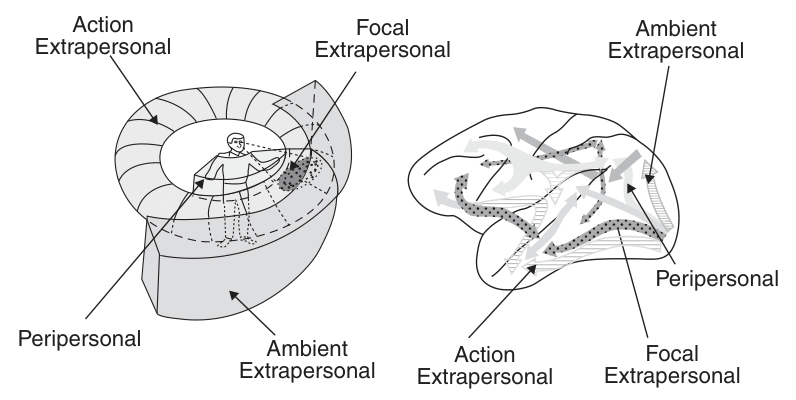
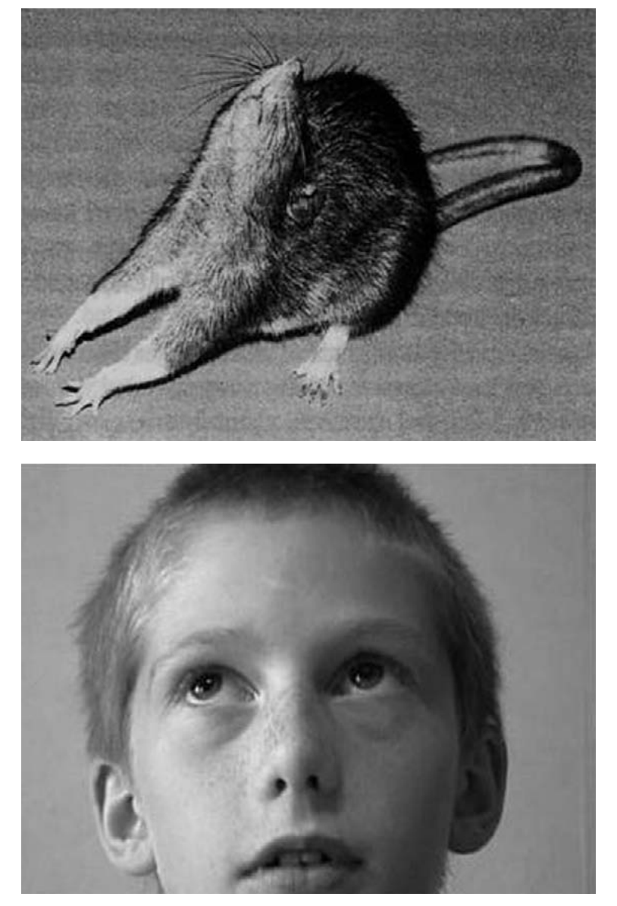
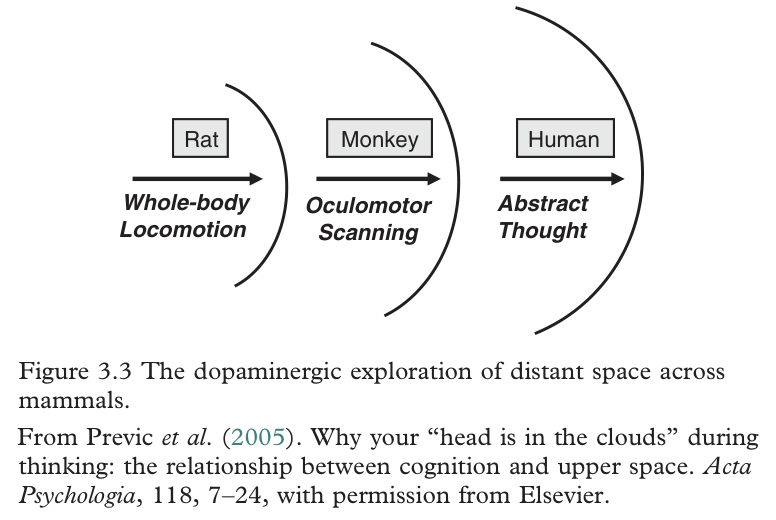
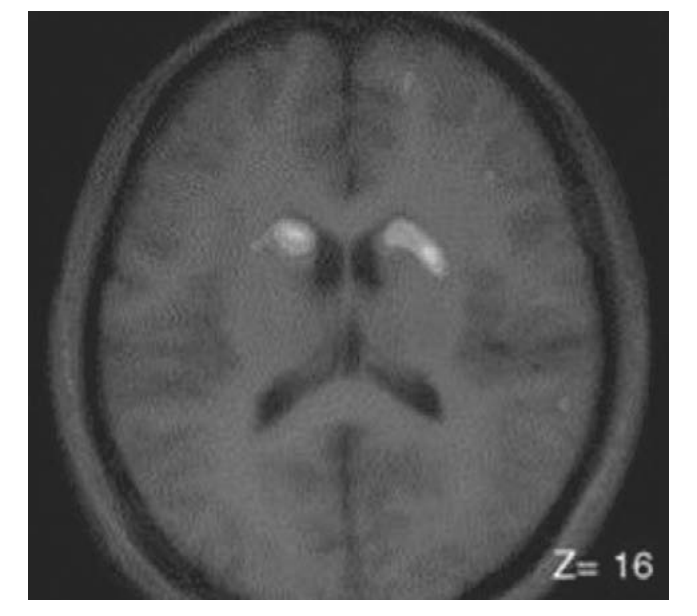

Chương 3 — Dopamine và hành vi
3 Dopamine và hành vi
Vai trò của dopamine trong hành vi bình thường và bất thường đã là chủ đề của một lượng lớn nghiên cứu kể từ khi dopamine lần đầu tiên được chứng minh có liên quan đến bệnh Parkinson, tâm thần phân liệt, cũng như các cơ chế động lực và phần thưởng vào những năm 1960 và 1970. Dựa trên số lượng ấn phẩm khoa học đề cập đến nó, dopamine có thể coi là chất dẫn truyền thần kinh quan trọng nhất hoặc ít nhất là hấp dẫn nhất trong não bộ. Nó có liên quan đến một số lượng rất lớn các hành vi, với tính phổ quát về mặt lý thuyết đến mức người ta từng gọi đùa nó là “chất dẫn truyền của mọi người vì nó làm mọi thứ” (Koob, được trích dẫn trong Blum, 1997).
Có một kết luận chung về dopamine và hành vi mà đại đa số các nhà khoa học thần kinh đều đồng tình: dopamine kích hoạt và thúc đẩy hành vi vận động. Sự gia tăng dẫn truyền dopamine, ít nhất là đến một ngưỡng nhất định, dẫn đến sự hoạt hóa hành vi (ví dụ: tăng khả năng di chuyển, phát âm và các cử động của khuôn mặt cũng như chi trên) và đẩy nhanh các phản ứng vận động; ngược lại, sự suy giảm dẫn truyền dopamine dẫn đến các hội chứng bất động, bao gồm cả chứng câm lặng ở mức độ cực đoan (Beninger, 1983; Salamone và cộng sự, 2005; Tucker và Williamson, 1984). Một trong những đặc điểm nổi bật của tình trạng dư thừa dopamine trong não là hành vi vận động được gọi ở các loài động vật bậc thấp là “hành vi rập khuôn” (stereotypy) – những cử động liên tục, lặp đi lặp lại giống như hành vi cưỡng chế ở người (Ridley và Baker, 1982). Một ví dụ điển hình về vai trò của dopamine trong hành vi vận động là chuột “stargazer” (ngắm sao), loài có nồng độ dopamine rất cao và mức độ hoạt động gấp bốn đến năm lần so với chuột bình thường (Brock và Ashby, 1996; Truett và cộng sự, 1994). Các chất kích thích nổi tiếng làm tăng dẫn truyền dopamine như amphetamine và cocaine được coi là chất kích thích, trong khi các loại thuốc ức chế hoạt động dopaminergic như haloperidol được coi là thuốc an thần kinh chủ yếu. Ví dụ, chất chủ vận dopaminergic quinpirole được biết là tạo ra sự gia tăng gấp sáu lần quãng đường di chuyển trong thử nghiệm trường mở (Szechtman và cộng sự, 1993), và dopamine là chất dẫn truyền thần kinh liên quan nhiều nhất đến các giai đoạn hưng cảm ở người, trong đó mức độ hoạt động tăng cao đột biến (xem Chương 4).
Mặc dù sự thoái hóa của hệ thống dopaminergic liềm đen – thể vân, nếu đủ nghiêm trọng, có thể ảnh hưởng đến hầu hết mọi loại hoạt động vận động, nhưng vai trò chung của dopamine trong việc kích thích hành vi vận động lại ẩn chứa một mức độ đặc hiệu đáng kể trong các tác động vận động của nó. Ví dụ, ở mức độ tỉnh táo bình thường, dopamine kích thích:
1..hành vi thăm dò (tìm kiếm) nhiều hơn so với chải chuốt xã hội ở cự ly gần; 2..hành vi dự đoán (tìm mồi) nhiều hơn so với hành vi tiêu thụ; 3..hoạt động tình dục nhiều hơn so với ăn uống; 4..hành vi tình dục chủ động của giống đực (leo lên) nhiều hơn so với hành vi tiếp nhận của giống cái (ưỡn lưng - lordosis); 5..chuyển động mắt giật cục (saccade) nhiều hơn so với chuyển động mắt bám đuổi mượt mà; và 6..các chuyển động hướng lên trên nhiều hơn so với hướng xuống dưới.
Tất cả các hành vi vận động mà dopamine kích thích một cách chọn lọc này có điểm gì chung? Để có một lời giải thích thỏa đáng, điều cốt yếu trước tiên là phải hiểu vai trò nền tảng của dopamine trong việc điều phối các hành động của chúng ta trong không gian và thời gian xa.
3.1 Dopamine với không gian và thời gian xa
Các tương tác của chúng ta trong không gian 3 chiều diễn ra khắp mọi nơi và có lẽ là yếu tố quan trọng nhất định hình nên các con đường dẫn truyền chính của não người (Previc, 1998). Tất cả các hệ thống cảm giác và vận động của chúng ta đều có thể liên kết với các vùng khác nhau của không gian 3 chiều, và hầu như không có hành vi nào (kể cả ngôn ngữ) mà không thể liên kết với các hệ thống không gian cụ thể. Ví dụ, ngay cả ngôn ngữ cũng gắn kết chặt chẽ với hệ thống thính giác và thị giác được sử dụng ở không gian xa hơn là với hệ thống xúc giác và cảm nhận vận động liên quan đến hoạt động với tay trong không gian gần. Tương tự như vậy, tất cả các hành vi của chúng ta đều có thể được xác định bởi phạm vi thời gian của chúng – tức là việc tìm kiếm thức ăn, bạn tình hoặc một mục tiêu thứ cấp như một công việc tốt đều liên quan đến tương lai, trong khi sự đụng chạm và tận hưởng các khoái cảm giác quan lại gắn liền với hiện tại.
Có bốn hệ thống não bộ tổng quát xử lý các tương tác hành vi của chúng ta trong không gian 3 chiều (xem Hình 3.1). Một hệ thống, được gọi là hệ thống cận thân (peripersonal), chủ yếu được sử dụng để thực hiện các thao tác có sự dẫn hướng của thị giác trong không gian gần cơ thể. Hệ thống này thiên về trường thị giác phía dưới, nơi cánh tay thường đặt khi với lấy và đưa đồ vật lên miệng. Một hệ thống khác, được gọi là hệ thống ngoại thân xung quanh (ambient extrapersonal), tham gia vào việc kiểm soát tư thế và di chuyển trong không gian cố định với mặt đất và cũng thiên về trường phía dưới hơn, nơi mặt phẳng mặt đất

Theo Previc, F. H. (1998). The neuropsychology of 3-D space. Psychological Bulletin, 124, 123–164, được phép sử dụng.
chiếm ưu thế. Cả hai hệ thống này đều sử dụng rộng rãi hệ thống tiền đình, xúc giác và các hệ thống “cơ thể” khác, chạy theo hướng lưng qua thùy đỉnh và dựa vào các chất dẫn truyền thần kinh như norepinephrine và ở mức độ ít hơn là serotonin, vốn rất quan trọng đối với các hệ thống kích thích sinh lý (và cảm xúc) (Previc, 1998). Ngược lại, dopamine dường như ít tham gia vào các hệ thống này hoặc vào các đại diện của chúng. Như đã đề cập trong Chương 2, serotonin và norepinephrine cũng chủ yếu khu trú ở bán cầu não phải, vốn quan trọng hơn cả trong các hoạt động cận thân lẫn trong việc định hướng hệ thống tư thế và tri giác của chúng ta theo trọng lực.
Mặt khác, dopamine là chất dẫn truyền thần kinh chính cho hai hệ thống chủ yếu xử lý không gian ngoại thân. Một trong số đó là hệ thống ngoại thân tiêu điểm (focal-extrapersonal), tham gia vào việc tìm kiếm, quét môi trường và nhận diện các vật thể bên trong nó. Hệ thống này hoạt động ở khoảng cách xa vì các vật thể hiếm khi được đưa vào không gian cá nhân của chúng ta trừ khi chúng ta đã nhận diện được chúng. Hệ thống này sử dụng thị giác trung tâm và chủ yếu là các chuyển động mắt giật cục để thực hiện quá trình tìm kiếm thị giác, và nó khu trú chủ yếu ở thùy thái dương bụng-bên, vỏ não trước trán bên, và ở mức độ ít hơn là vùng xung quanh trường mắt đỉnh. Nó hỗ trợ xử lý thị giác chi tiết, các tương tác có chủ đích và được kiểm soát với môi trường ngoại thân, cũng như các chức năng kiểm soát điều hành tập trung gắn liền với nhân cách/trí tuệ dopaminergic bên (xem Mục 3.4.2). Hệ thống thứ hai, nằm ở vùng ngoại vi hơn, được gọi là hệ thống ngoại thân hành động (action-extrapersonal), mang lại cho chúng ta cảm giác “hiện diện” trong môi trường và hỗ trợ việc thăm dò, điều hướng và định hướng tới các kích thích và cột mốc nổi bật. Hệ thống này kéo dài theo hướng bụng-giữa qua thùy thái dương giữa, hồi hải mã và các vùng hệ viền rồi tiến vào các vùng trán bụng-giữa, phần lớn song song với hệ thống vỏ não dopamine giữa được mô tả trong Chương 2. So với hệ thống ngoại thân tiêu điểm, hệ thống này ít tập trung và ít quan tâm đến chi tiết hơn, đồng thời nó hỗ trợ các chức năng sáng tạo và bốc đồng hơn gắn liền với nhân cách/trí tuệ dopaminergic bụng-giữa (xem Mục 3.4.1).
Một hệ quả của mối liên hệ giữa dopamine với không gian xa là nó đóng vai trò quan trọng trong các giác quan “ngoại thụ” (exteroceptive) như thị giác (nhìn xa), thính giác và khứu giác, trong khi đối trọng của nó là norepinephrine lại gắn liền hơn với các tín hiệu “nội thụ” (interoceptive - xúc giác và cơ thể) (Crow, 1973). Thật vậy, ngày nay người ta công nhận rằng có những kết nối giải phẫu rất chặt chẽ giữa hệ thống khứu giác và các hệ thống động lực dopaminergic giữa (Ikemoto, 2007). Một hệ quả khác của mối liên hệ giữa dopaminergic với không gian xa là, vì trường thị giác phía trên bao gồm phần xa nhất của thế giới thị giác do độ dốc của mặt phẳng mặt đất khi nó lùi xa khỏi chúng ta, nên các hệ thống ngoại thân tiêu điểm và hành động đều thiên về trường phía trên, cũng giống như chính dopamine vậy. Mối tương quan thứ ba của việc dopamine tham gia vào không gian xa là sự tham gia của nó vào thời gian xa (đặc biệt là tương lai). Không giống như các hoạt động cận thân, trong đó kích thích gợi mở hoặc phần thưởng có thể ở ngay gần và đòi hỏi rất ít nỗ lực để với tới hoặc có được, việc theo đuổi các phần thưởng ở xa hoặc bị trì hoãn đòi hỏi nỗ lực đáng kể và sự chờ đợi, cả hai điều này thường được dopamine giúp vượt qua (Denk và cộng sự, 2005; Salamone và cộng sự, 2005).
Những mối liên hệ trên với không gian xa giải thích lý do tại sao dopamine lại tham gia một cách chọn lọc vào vô số hành vi có nhiều khả năng được thực hiện bên ngoài không gian và thời gian trực tiếp của chúng ta. Ví dụ, dopamine rất quan trọng đối với:
1..hầu hết nếu không muốn nói là tất cả các hành vi hướng lên trên (Previc, 1998); 2..các chuyển động mắt giật cục, được sử dụng để khám phá thế giới xa và thiên về hướng lên trên nhiều hơn so với các chuyển động hội tụ và bám đuổi mượt mà (Previc, 1998); 3..hành vi tình dục kiểu “đực”, trái ngược với hành vi tương ứng ở giống cái, mang tính chủ động hơn là tiếp nhận và phụ thuộc nhiều hơn vào các tín hiệu từ xa như mùi hương và tín hiệu thị giác hơn là các tín hiệu cơ thể bên trong để kích hoạt (Robbins và Everitt, 1982).
Ngược lại, dopamine ít tham gia hơn và/hoặc trong một số trường hợp thực sự ức chế các hành vi gắn liền với cận thân hơn như:
1..chải chuốt xã hội và các hành vi gắn kết khác, vốn quan trọng đối với sự gắn kết nhóm và sức khỏe cảm xúc và chịu ảnh hưởng nhiều hơn bởi oxytocin, opioid và giao tiếp xúc giác (Schlemmer và cộng sự, 1980); 2..các khía cạnh tiêu thụ của việc ăn uống, vốn phụ thuộc nhiều hơn vào chức năng opioid (thụ thể mu) (Baldo và Kelley, 2007; Blackburn và cộng sự, 1992); và 3..hành vi tình dục tiếp nhận ở giống cái và hành vi làm mẹ như tư thế ưỡn lưng (lordosis) và tiết sữa, vốn được kích thích bởi các tín hiệu xúc giác cũng như các thụ thể noradrenergic và opioid mu (Depue và Morrone-Strupinsky, 2005; Robbins và Everitt, 1982).
Thậm chí có thể lập luận rằng vai trò được ghi nhận rõ ràng của dopamine trong hành vi hướng đến mục tiêu (tìm kiếm) là hệ quả của định hướng nguyên thủy của nó về phía không gian và thời gian xa (xem phần tiếp theo).
Vai trò của dopamine trong không gian 3 chiều và thời gian sẽ được khám phá sâu hơn trong vài mục tới. Mục 3.1.1 sẽ trình bày chi tiết vai trò cụ thể của dopamine trong việc chú ý đến không gian và thời gian xa, trong khi Mục 3.1.2 sẽ mô tả vai trò của dopamine trong hành vi hướng đến mục tiêu/phần thưởng và Mục 3.1.3 sẽ điểm qua vai trò của dopamine trong các trạng thái biến đổi ý thức và các trải nghiệm khác mà trong đó các chủ đề ngoại thân chiếm ưu thế so với các chủ đề cận thân.
3.1.1 Dopamine và sự chú ý đến các tín hiệu xa về không gian và thời gian
Một lượng lớn dữ liệu đã được tích lũy trong vài thập kỷ qua cho thấy dopamine trong não bộ đóng vai trò thiết yếu đối với việc chú ý đến không gian và thời gian xa.1 Động vật bị thiếu hụt dopamine không dễ dàng định hướng hoặc tạo liên kết với các kích thích ở xa (Blackburn và cộng sự, 1992), điều này trái ngược với tác dụng của các thuốc dopaminergic làm gia tăng các hành vi được điều khiển bởi tín hiệu từ xa (Szechtman và cộng sự, 1993). Thật vậy, chỉ những động vật có nồng độ dopamine bình thường mới chú ý (định hướng) đến các kích thích mới lạ ở xa nếu chúng đang thực hiện hành vi tiêu thụ như ăn uống (Hall và Schallert, 1988). Tác động của dopamine trong việc chuyển cán cân chú ý về phía không gian xa và rời khỏi không gian cận thân được minh họa qua vai trò của nó trong hành vi tích trữ. Nếu một con vật được đưa cho một mẩu thức ăn, nó có thể ăn ngay tại chỗ hoặc mang về tổ và cất giữ để
1 Khoảng cách trong trường hợp này không nhất thiết ngụ ý một thước đo không gian hay thời gian chính xác (ví dụ: mét hay phút) mà ít nhất là sự tách rời khỏi không gian trực tiếp xung quanh cơ thể và hiện tại trước mắt.
tiêu thụ sau. Thông thường việc tích trữ xảy ra chủ yếu đối với các vật thể lớn, ở gần (những vật nhỏ hơn có thể ăn ngay tại chỗ), nhưng nó cũng có thể xảy ra đối với các vật thể ở xa hơn. Tuy nhiên, nếu một con vật bị tước đoạt dopamine, khoảng cách mà hành vi tích trữ xảy ra bị thu hẹp xuống chỉ còn khoảng hai mét (Dringenberg và cộng sự, 2000). Một sự thất bại tương tự trong việc tích trữ các mẩu thức ăn ở xa cũng xảy ra ở những động vật bị tổn thương hồi hải mã (Whishaw, 1993), một cấu trúc bụng-giữa quan trọng tham gia vào việc xử lý và ghi nhớ thông tin từ không gian xa (xem Previc, 1998) và là một phần của hệ thống tổng quát hơn liên quan đến định hướng về thời gian xa (Botzung và cộng sự, 2007; Fellows và Farah, 2005; Okuda và cộng sự, 2003).
Các ví dụ khác về sự tham gia của dopamine vào không gian xa là các thiên hướng chuyển động và chú ý hướng lên trên do sự hoạt hóa dopaminergic tạo ra, bắt nguồn từ mối liên hệ đã lưu ý trước đó giữa không gian phía trên với các phần xa hơn trong thế giới thị giác của chúng ta (Previc, 1998). Ví dụ về các thiên hướng hướng lên trên này bao gồm đứng bằng hai chân sau, đánh hơi theo phương thẳng đứng, ngửa đầu lên trên và leo trèo theo phương thẳng đứng (như trên thành lồng của con vật). Một trong những ví dụ ấn tượng nhất về hành vi thiên về hướng lên trên như vậy là tình trạng ngửa đầu gần như liên tục ở chuột “stargazer” tăng động, giàu dopamine (Brock và Ashby, 1996; Truett và cộng sự, 1994) (xem Hình 3.2a). Hành vi này có những điểm tương đồng thú vị với các chuyển động ngửa đầu và liếc mắt lên trên vốn luôn được chứng minh là đi kèm với hoạt động trí óc bậc cao ở người (Hình 3.2b) và có lẽ bắt nguồn từ vỏ não trước trán bên giàu dopamine (Previc và cộng sự, 2005). Các thiên hướng hành vi ở trường thị giác phía trên ở động vật còn nhất quán với các chuyển động mắt hướng lên trên và ảo giác thị giác ở trường phía trên thường thấy trong bệnh tâm thần phân liệt (Bracha và cộng sự, 1985; Previc, 2006), vốn do dư thừa dopamine gây ra. Ngược lại, sự suy giảm dẫn truyền dopaminergic do tổn thương các con đường liềm đen – thể vân hoặc do uống các chất đối kháng dopaminergic dẫn đến ít chuyển động mắt hướng lên trên hơn, chứng lãng quên chú ý đối với trường phía trên, và hành vi lao đầu xuống dưới (lộn nhào từ trên cao xuống) (xem tổng quan trong Previc, 1998). Ví dụ, những bệnh nhân Parkinson giảm dopamine có xu hướng với tay thấp hơn mục tiêu trong các bài tập với tay phụ thuộc vào trí nhớ (Poizner và cộng sự, 1998), và họ biểu hiện ít chuyển động mắt giật cục hướng lên trên hơn (Corin và cộng sự, 1972; Hotson và cộng sự, 1986) và thậm chí nén (bỏ qua) trường phía trên (Lee và cộng sự, 2002). Ngược lại, sự hoạt hóa serotonergic có xu hướng làm giảm các hành vi hướng lên trên (Blanchard và cộng sự, 1997), nhất quán với sự ức chế bình thường của serotonin đối với dopamine ở nhiều vùng khác nhau của não.
Một khía cạnh khác về sự tham gia của dopamine vào không gian xa là xu hướng được ghi nhận rõ ràng ở những động vật có nồng độ dopamine bình thường trong việc khám phá một môi trường mới lạ bằng cách đánh hơi xung quanh chu vi của nó và thò

đột biến điếc mới ở chuột Zucker. Laboratory Animal Science, 44, 595–599, được phép sử dụng từ AALAS; con người trong lúc hoạt động trí óc (dưới), ảnh do Carolyn Declerck cung cấp.

thinking: the relationship between cognition and upper space. Acta Psychologia, 118, 7–24, được phép sử dụng từ Elsevier.
đầu vào các lỗ khác nhau. Trên thực tế, nồng độ dopamine bình thường là thiết yếu để động vật ưa thích một môi trường mới lạ hơn một môi trường quen thuộc (Fink và Smith, 1980; Ikemoto và Panksepp, 1999; Pierce và cộng sự, 1990). Ngược lại, các hệ thống dopaminergic thực sự làm giảm hành vi thăm dò trong một môi trường quen thuộc, vì những động vật bị tước đoạt dopamine sẽ tiếp tục thăm dò một môi trường quen thuộc, và dopamine dường như ít tham gia một cách thiết yếu vào các phản ứng theo thói quen (Ikemoto và Panksepp, 1999). Phản ứng tăng cường đối với các môi trường mới lạ đã khiến một số nhà nghiên cứu kết luận rằng dopamine (cụ thể là thụ thể D4) điều phối tính tìm kiếm sự mới lạ (novelty-seeking) ở người (Bardo và cộng sự, 1996; Cloninger và cộng sự, 1993; Dulawa và cộng sự, 1999). Đáng tiếc là tính tìm kiếm sự mới lạ ở người thường hàm ý việc tìm kiếm cảm giác mạnh hoặc tìm kiếm kích thích làm tăng sự hưng phấn, điều này thực tế có thể ít liên quan đến mong muốn khám phá các môi trường xa một cách có kiểm soát và có hệ thống; quả thực, việc tìm kiếm cảm giác mạnh dường như phụ thuộc nhiều hơn vào các chất dẫn truyền thần kinh như norepinephrine vốn liên quan nhiều hơn đến sự kích thích giao cảm (Zuckerman, 1984). Do đó, không có gì ngạc nhiên khi mối quan hệ giữa các gen dopamine và tính tìm kiếm sự mới lạ ở người chưa được chứng minh là thực sự mạnh mẽ (Kluger và cộng sự, 2002), mặc dù ít nhất một thước đo về khuynh hướng thăm dò dường như có tương quan với sự sáng tạo được điều phối bởi dopaminergic (Reuter và cộng sự, 2005).
Mặc dù dopamine có thể điều phối sự khám phá ở tất cả các loài động vật có vú, nhưng công cụ dùng để khám phá thế giới lại khác nhau giữa các loài (Hình 3.3). Ở loài gặm nhấm, sự di chuyển toàn thân do dopaminergic điều phối và các hệ thống cảm giác từ xa thô sơ như khứu giác được sử dụng để khám phá một thế giới xa có thể được xác định trong phạm vi vài mét hoặc tối đa vài chục mét. Các loài linh trưởng thực hiện chủ yếu việc khám phá thị giác đối với một môi trường xa được mở rộng hơn nhiều bằng các chuyển động mắt giật cục do dopaminergic điều phối, được thực hiện với tốc độ khoảng hai đến ba lần mỗi giây và có thể định vị các mẩu thức ăn nhỏ ở khoảng cách hơn 25 mét. Ở con người, khái niệm không gian thậm chí còn vượt ra ngoài cái “ở đây và ngay lúc này”, để bao hàm cả khả năng tưởng tượng ra những thế giới và khái niệm thậm chí còn xa xôi hơn bằng phương tiện tư duy trừu tượng và trí tưởng tượng ngoại tuyến (Bickerton, 1995; Suddendorf và Corballis, 1997). Loại tư duy này được cho là mới chỉ tiến hóa hoàn chỉnh gần đây, đạt đến độ chín muồi cùng với các nền văn minh cổ đại (xem Taylor, 2005; Chương 6). Bất chấp sự khác biệt to lớn giữa không gian xa về mặt vật lý và không gian trừu tượng, sự khám phá vật lý và khám phá nhận thức sở hữu nhiều điểm chung, chẳng hạn như sự tham gia của dopaminergic và các thiên hướng hướng lên trên. Không có gì đáng ngạc nhiên khi các mối liên hệ trực tiếp giữa việc tìm kiếm thức ăn trong không gian và tìm kiếm thông tin trong nhận thức (Hills, 2006; Hills và cộng sự, 2007) và thậm chí giữa không gian số vật lý và nhận thức (Vuilleumier và cộng sự, 2004) đã được ghi nhận ở người.
Về vai trò dopaminergic trong việc chú ý đến thời gian xa (đặc biệt là tương lai), một ví dụ điển hình là vai trò của nó trong việc dự đoán phần thưởng. Schultz và các đồng nghiệp (Schultz và cộng sự, 1997) đã nghiên cứu sâu rộng vai trò của dopamine trong dự đoán phần thưởng và phát hiện ra rằng các tế bào thần kinh dopaminergic ở vùng mái bụng (ventral tegmentum) và chất đen (substantia nigra) hoạt động trong quá trình học tập phần thưởng. Các tế bào thần kinh dopaminergic phản ứng với các kích thích đi kèm với phần thưởng trong quá trình học, mặc dù chúng ngừng phản ứng với chính phần thưởng đó theo thời gian và thực sự bị ức chế nếu phần thưởng không xuất hiện sau các tín hiệu báo trước. Do đó, các tế bào thần kinh dopaminergic dường như nhạy cảm với khả năng dự đoán và thời điểm của mối quan hệ tín hiệu – phần thưởng. Hơn nữa, các tế bào thần kinh dopamine không phản ứng mạnh ngay cả khi đạt được phần thưởng nếu không cần sự chú ý đầy đủ đến các tình huống bất ngờ của môi trường (tức là phần thưởng quá dễ đoán) (Horvitz, 2000; Ikemoto và Panksepp, 1999). Việc các hệ thống dopaminergic quan tâm đến thời gian xa cũng được minh họa qua hành vi của cả chuột và người khi thích một phần thưởng nhỏ hơn nhưng có ngay lập tức hơn là một phần thưởng lớn hơn nhưng bị trì hoãn sau khi dùng các loại thuốc ức chế tổng hợp hoặc dẫn truyền dopamine (Denk và cộng sự, 2005; Sevy và cộng sự, 2006). Vai trò của dopamine trong việc cho phép thỏa mãn phần thưởng bị trì hoãn ở động vật nhất quán với sự hoạt hóa tương đối lớn hơn ở các vùng trước trán bên ở người khi đưa ra các quyết định liên quan đến phần thưởng bị trì hoãn so với phần thưởng tức thời (McClure và cộng sự, 2004) và với tác động của các tổn thương ở vùng trước trán bụng-giữa và thái dương giàu dopamine gây ra cái gọi là “chứng cận thị đối với tương lai” (Bechara và cộng sự, 2000; Botzung và cộng sự, 2008; Fellows và Farah, 2005; Okuda và cộng sự, 2003).
3.1.2 Dopamine và tính hướng đến mục tiêu
Hành động hướng đến mục tiêu có một số yêu cầu chức năng, bao gồm:
1..lưu giữ vị trí không gian và biểu tượng của đối tượng mục tiêu cùng các cột mốc trong trí nhớ tức thời trong khi tiến về phía mục tiêu (trí nhớ làm việc); 2..hiểu các mối quan hệ nhân quả để dự đoán hoặc kiểm soát sự xuất hiện của phần thưởng; 3..phát triển một biểu tượng thời gian (sắp xếp theo trình tự) của hành động; và 4..thay đổi hành vi dựa trên phản hồi từ môi trường, chẳng hạn như chuyển đổi chiến lược.
Dopamine là chất dẫn truyền thần kinh chính tham gia vào tất cả các kỹ năng này (Previc, 1999), và các hệ thống dopaminergic – đặc biệt là các hệ thống bụng-giữa – cung cấp động lực thúc đẩy cho những hành động thường khá phức tạp và đòi hỏi nhiều nỗ lực với sự thỏa mãn bị trì hoãn. Thật vậy, như đã lưu ý trong Chương 2, sự phá hủy các hệ thống dopaminergic giữa trong não có thể dẫn đến tình trạng vô cảm động lực sâu sắc, mặc dù hành vi khác vẫn bình thường (Salamone và cộng sự, 2005; Solms, 2000; Tekin và Cummings, 2002).2
Vai trò của dopamine trong hoạt động hướng đến mục tiêu sẽ bị hạn chế hơn nhiều nếu nó không điều phối sự chú ý của chúng ta đến không gian và thời gian xa. Việc dự đoán phần thưởng thường đòi hỏi khả năng tạo liên kết giữa các tín hiệu ở xa và các đối tượng phần thưởng, và các hệ thống dopaminergic đã được chứng minh là đặc biệt quan trọng khi hoạt động hướng đến mục tiêu dựa vào các tín hiệu thị giác hoặc phi thị giác (ví dụ: xúc giác) ở xa hơn là ở gần (Blackburn và cộng sự, 1992; Szechtman và cộng sự, 1993; Whishaw và Dunnett, 1985). Và như đã lưu ý, các chuỗi hành vi kéo dài để đạt được những mục tiêu xa hơn cũng đòi hỏi sự nhận thức về khoảng cách thời gian tới mục tiêu. Thậm chí dường như có một mối quan hệ chặt chẽ giữa mức độ ý thức về tương lai của một người và mức độ động lực của người đó, với các tổn thương trán bụng-giữa làm suy giảm cả hai (xem Fellows và Farah, 2005; xem thêm Mục 3.4.1).
Dopamine đã được nghiên cứu rộng rãi cùng với các khía cạnh khác nhau của hành vi hướng đến mục tiêu ở động vật và cùng với chứng nghiện, sự vô cảm và các rối loạn động lực khác ở người. Động lực
2 Ví dụ, những bệnh nhân được phẫu thuật cắt thùy trước trán giữa và cắt chất trắng trán trong những năm 1940 để điều trị bệnh tâm thần thường vẫn giữ được mức độ trí thông minh trong giới hạn trước phẫu thuật (Rosvold và Mishkin, 1950), mặc dù các động lực thúc đẩy bị suy giảm sâu sắc.
thúc đẩy dopaminergic trong nhiều trường hợp có thể hướng tới việc đạt được các phần thưởng cần thiết cho sự sống còn về mặt thể chất, chẳng hạn như tìm kiếm thức ăn hoặc nước uống, nhưng trong những trường hợp khác thì không. Ví dụ, việc tìm kiếm phần thưởng tình dục, các món có vị ngọt, ma túy giải trí, và các phần thưởng có giá trị được lĩnh hội như tiền bạc và kiến thức không đáp ứng bất kỳ nhu cầu sinh lý tức thời nào. Trong những trường hợp này, các phần thưởng phải có được một giá trị khích lệ (incentive value) có thể biện minh cho những tiêu tốn hành vi đôi khi rất lớn cần thiết để đạt được chúng. Hầu hết các lý thuyết hàng đầu đều cho rằng dopamine đóng vai trò thiết yếu trong động lực khích lệ (incentive motivation) – động lực cần thiết để tìm kiếm và đạt được các mục tiêu/phần thưởng, ngay cả khi chúng không cần thiết cho sự sống còn sinh lý tức thời (Blackburn và cộng sự, 1992; Beninger, 1983; Berridge và Robinson, 1998; Depue và Collins, 1999; Horvitz, 2000; Ikemoto và Panksepp, 1999; Salamone và cộng sự, 2005). Vai trò cụ thể của dopamine trong việc thực hiện hành vi hướng đến mục tiêu đã được nghiên cứu nhiều nhất trong hành vi ăn uống và tình dục. Dựa trên sự phân biệt kinh điển giữa hành vi tìm mồi (appetitive) và hành vi tiêu thụ (consummatory), dopamine được hầu hết các nhà nghiên cứu coi là tham gia nhiều hơn vào hành vi tìm mồi/tìm kiếm/kiếm ăn (Alcaro và cộng sự, 2005; Ikemoto và Panksepp, 1999). Sự gián đoạn dopamine thường không ngăn cản động vật tiêu thụ thức ăn đã ở ngay gần, nhưng nó ảnh hưởng đến khả năng khởi phát phản ứng hướng đến mục tiêu, học các điều kiện hành vi dẫn đến việc đạt được phần thưởng, và duy trì phản ứng khi sự thỏa mãn bị trì hoãn (Baldo và Kelley, 2007; Berridge và Robinson, 1998; Blackburn và cộng sự, 1992; Dringenberg và cộng sự, 2000; Denk và cộng sự, 2005; Ikemoto và Panksepp, 1999; Salamone và cộng sự, 2005). Ví dụ, các tế bào thần kinh dopamine được kích thích trong các hành vi chuẩn bị (hướng đến mục tiêu) trước khi ăn thức ăn, đặc biệt là đối với thức ăn ngon miệng, nhưng chúng không hoạt động mạnh trong quá trình thực sự tiêu thụ thức ăn, ngay cả với những món ngon (Baldo và Kelley, 2007; Blackburn và cộng sự, 1992). Dopamine thậm chí còn tham gia thiết yếu hơn vào hành vi tình dục của giống đực, vốn ở loài gặm nhấm bao gồm một chuỗi các hành động hướng đến mục tiêu rất phức tạp, bao gồm di chuyển tới con cái đang sẵn sàng, leo lên lưng con cái và giao phối. Các hệ thống dopaminergic nguyên vẹn, được thúc đẩy bởi hormone nam giới testosterone (Hull và cộng sự, 2004), là cần thiết cho hai hành vi chuẩn bị/tìm kiếm đầu tiên này, nhưng chúng không cần thiết cho bản thân việc giao phối (Blackburn và cộng sự, 1992). Tuy nhiên, bản thân việc giao phối thực sự kích hoạt các tế bào thần kinh dopaminergic trong nhân nằm và các cấu trúc giữa khác ở mức độ lớn hơn so với việc tiêu thụ thức ăn thông thường (Blackburn và cộng sự, 1992), vốn có giá trị dựa trên sự sinh tồn nhiều hơn là dựa trên sự khích lệ. Như đã lưu ý trước đó, sự tạo điều kiện của dopamine đối với hành vi tình dục chủ yếu giới hạn ở giống đực, vì hầu hết hành vi tình dục kiểu giống cái phụ thuộc vào các chất dẫn truyền khác như norepinephrine và thực sự bị ức chế bởi các chất chủ vận dopamine như apomorphine (Robbins và Everitt, 1982).3
Một số nhà nghiên cứu đã diễn giải vai trò của dopamine trong hành vi tình dục của giống đực và các hoạt động “khoái lạc” khác là do sự tham gia chung của dopamine vào hoạt động khoái cảm. Tuy nhiên, như Berridge và Robinson (1998) lưu ý, có sự khác biệt giữa “thích” (liking – thực sự nhận được khoái cảm từ) một phần thưởng và “muốn” (wanting – thèm khát) nó. “Thích” hàm ý một phản ứng cảm xúc tích cực, trong khi “muốn” hàm ý một động lực thúc đẩy có thể gắn liền hoặc không gắn liền với một cảm xúc tích cực hay thậm chí bất kỳ cảm xúc nào. Một ví dụ điển hình cho điều này là nghiện ma túy, cờ bạc, tình dục, v.v. – bản thân phần thưởng có thể ít quan trọng hơn quá trình đạt được phần thưởng đó. Người ta đã liên tục chứng minh rằng các hệ thống dopaminergic giữa tham gia nhiều hơn vào việc “muốn” hơn là “thích” (Berridge và Robinson, 1998; Blackburn và cộng sự, 1992; Evans và cộng sự, 2006; Ikemoto và Panksepp, 1999; Salamone và Correa, 2002). Vai trò lớn hơn của dopamine trong động lực thúc đẩy thay vì bản thân việc trải nghiệm khoái cảm giác quan có thể liên quan đến sự tham gia của nó trong hành vi ám ảnh cưỡng chế và nghiện tâm lý (xem Chương 4), cả hai đều liên quan đến những động lực hành vi mãnh liệt cho những mục đích không nhất thiết mang lại khoái cảm hay lợi ích. Những động lực hành vi dopaminergic mạnh mẽ có thể được duy trì chỉ để tránh các sự kiện gây khó chịu hoặc để đạt được các vật khích lệ (ma túy, tình dục, tiền bạc, v.v.) mà theo thời gian có thể trở nên rất gây nghiện hoặc tự hủy hoại. Ở mức độ cực đoan, con người thậm chí có thể chọn những lý tưởng tôn giáo và chính trị hoàn toàn trừu tượng thay vì sự sống còn cơ bản. Điều này có thể được thể hiện một cách tích cực trong tuyên bố của Martin Luther King Jr. rằng “nếu một người chưa khám phá ra điều gì đó mà anh ta sẵn sàng chết vì nó, anh ta không xứng đáng được sống.”4
Nhưng nó cũng được thể hiện trong làn sóng đánh bom tự sát gây chấn động ở Trung Đông trong những năm gần đây, sự phi lý bi thảm của các cuộc Thập tự chinh, và những hậu quả kinh hoàng của vô số cuộc xung đột ý thức hệ chính trị và tôn giáo trong suốt lịch sử (xem Chương 6).
Có thể đưa ra một vài nhận định chung về vai trò của các hệ thống dopaminergic khác nhau trong động lực và tính hướng đến mục tiêu. Thứ nhất, các hệ thống bụng-giữa ở vùng hệ viền và não trước nền cung cấp động lực thúc đẩy hoặc xung lực chính cho hành động hướng đến mục tiêu. Vỏ não
3 Những đặc điểm khác nhau của hành vi tình dục ở giống đực và giống cái (lần lượt là “chủ động” và “tiếp nhận”) và sự tham gia khác biệt của dopamine trong đó nhất quán với các bằng chứng khác cho thấy dopamine nói chung tham gia nhiều hơn vào các trạng thái nhận thức, chú ý và hành vi “chủ động” so với “thụ động” (Tucker và Williamson, 1984). 4 Bài phát biểu tại Detroit, MI, ngày 27 tháng 6 năm 1963. Trực tuyến tại: www.quotationspage.com/ quote/24968.html.
trán-ổ mắt và vỏ não đai trước sau đó giúp tổ chức và tập trung hành vi hướng đến mục tiêu thành các chuỗi hướng đến mục tiêu có ý nghĩa. Cuối cùng, vỏ não trước trán bên, kết hợp với các hệ thống thể vân, điều chỉnh các hành động hướng đến mục tiêu này dựa trên dự đoán và phản hồi từ môi trường (ví dụ: bằng cách cập nhật hành vi mục tiêu ban đầu trong trí nhớ dựa trên thông tin ngữ cảnh hiện tại). Mạng lưới trước trán bên cũng cung cấp khả năng chuyển đổi hành động hoặc chiến lược, điều mà nó thực hiện bằng cách ức chế các phản ứng trước đó. Sự tham gia của các hệ thống dopaminergic bên vào trí nhớ làm việc, chuyển đổi nhận thức và các hành vi kiểu “điều hành” khác rốt cuộc là nền tảng cho vai trò lớn hơn của dopaminergic trong trí thông minh bậc cao, như được thảo luận trong Mục 3.2.
3.1.3 Dopamine và các trải nghiệm ngoại thân
Một biểu hiện thú vị về vai trò của dopamine trong việc điều phối cả không gian và thời gian hướng lên trên lẫn ở xa là sự tham gia của nó vào các trạng thái biến đổi ý thức như mơ và ảo giác, cũng như trong các trải nghiệm tôn giáo ở người. Như tôi đã mô tả gần đây (Previc, 2006), tất cả các hoạt động này đều bao gồm:
1..sự chiếm ưu thế của các đầu vào cảm giác ngoại thân (ở xa) (ví dụ: thính giác và thị giác); 2..sự thiếu hụt các đầu vào cận thân (ví dụ: xúc giác và cảm nhận vận động); 3..sự nhấn mạnh vào các chủ đề ngoại thân (ví dụ: bay lượn hoặc di chuyển ra ngoài cơ thể); và 4..sự hiện diện của các chuyển động mắt hướng lên trên và các thiên hướng trường phía trên khác.
Sự hoạt hóa dopaminergic, do các trạng thái sinh lý biến đổi (ví dụ: thiếu oxy/cận tử, thiếu hụt cảm giác/cô lập, căng thẳng cực độ) hoặc các yếu tố hóa học thần kinh khác (giảm hoạt hóa glutamatergic, cholinergic và serotonergic ở các mức độ khác nhau) gây ra, dường như là mẫu số chung trong tất cả các trải nghiệm này (Previc, 2006). Một trong những biểu hiện ấn tượng nhất của sự hoạt hóa dopaminergic là trải nghiệm thoát xác (out-of-body experience), có thể xảy ra trong lúc gặp ảo giác, mơ, thiếu hụt cảm giác, thiếu oxy, rối loạn loạn thần, thôi miên, trạng thái siêu việt và các sự kiện sang chấn tâm lý như bị cưỡng hiếp. Việc giảm đầu vào cảm giác sẽ giải phóng sự ức chế bình thường của các đầu ra cảm giác serotonergic, cholinergic và noradrenergic lên dopamine, vốn hiện diện rất ít ở các vùng xử lý cảm giác. Ngược lại, các trải nghiệm “cận tử” do thiếu oxy, giấc mơ và các phản ứng giải thể nhân cách trong các trải nghiệm sang chấn có thể đóng vai trò làm tăng dopamine như một phần của quá trình làm dịu cơ thể nói chung nhằm tiết kiệm oxy trong các đợt thiếu oxy, chống lại sự tăng thân nhiệt trước khi ngủ (nhiệt độ cơ thể của chúng ta giảm xuống trong khi ngủ và mơ), và làm giảm sự kích thích cảm xúc bằng cách giảm các hormone giao cảm liên quan đến phản ứng trước các sự kiện gây căng thẳng tâm lý (xem Chương 2).
Nhiều nhà nghiên cứu đã đặt ra giả thuyết về sự tương đồng cơ bản giữa giấc mơ và ảo giác (Hobson, 1996; Rotenberg, 1994; Solms, 2000), vốn thậm chí còn có chung một gốc từ nguyên.5 Ảo giác có mối quan hệ mật thiết với giấc mơ, thể hiện qua việc ảo giác thường xuyên xảy ra ở những người bình thường sau khi thiếu ngủ hoặc trong hay ngay trước khi bắt đầu ngủ (“ảo giác lúc sắp ngủ” - hypnogogic) hoặc ngay sau khi thức dậy (“ảo giác lúc sắp tỉnh” - hypnopompic) (Cheyne và Girard, 2004; Girard và Cheyne, 2004; Girard và cộng sự, 2007). Hơn nữa, ảo giác thậm chí có thể xảy ra ở những người đang thức khi đi kèm với các đợt hoạt động chuyển động mắt nhanh (REM), vốn thường gắn liền với giấc mơ (Arnulf và cộng sự, 2000). Khi được sử dụng trước khi ngủ, các chất gây ảo giác như LSD được biết là làm tăng cường giấc mơ (Muzio và cộng sự, 1966), và bệnh nhân tâm thần phân liệt mô tả ảo giác của họ giống như giấc mơ (Gottesmann, 2002). Giấc mơ và ảo giác cũng gắn bó chặt chẽ với các truyền thống tôn giáo hoặc liên quan đến trải nghiệm tôn giáo (Batson và Ventis, 1982: Chương 4; Gunter, 1983; Koyama, 1995; Pahnke, 1969; Saver và Rabin, 1997). Giấc mơ từng được coi là phương tiện để nhận thông điệp từ thế giới siêu nhiên (ví dụ: giấc mơ của Joseph trong Sách Sáng Thế) và gặp gỡ tổ tiên, như được minh họa qua việc xây dựng nhiều ngôi đền tôn giáo cổ đại ở Nhật Bản nhằm thúc đẩy việc nằm mơ (Koyama, 1995). Việc sử dụng các chất gây ảo giác dẫn đến các trải nghiệm thần bí và hình ảnh tôn giáo (xem tổng quan của Batson và Ventis, 1982: Chương 4; Goodman, 2002; Pahnke, 1969; Saver và Rabin, 1997), và ảo giác trong bệnh động kinh cũng như tâm thần phân liệt hoang tưởng được giả thuyết là đã dẫn đến những trải nghiệm truyền cảm hứng cho nhiều tôn giáo hàng đầu thế giới, bao gồm những trải nghiệm của Thánh Paul (người sáng lập Công giáo), Mohammed (người sáng lập Hồi giáo) và Joseph Smith (người sáng lập đạo Mặc Môn) (xem Saver và Rabin, 1997). Thật vậy, động kinh và tâm thần phân liệt, cả hai đều liên quan đến sự hoạt hóa mạnh mẽ của các con đường dopaminergic bụng-giữa, là hai chứng rối loạn gắn liền rõ rệt với chứng sùng đạo quá mức (xem Previc, 2006), vì động kinh từng được người Hy Lạp gọi là căn bệnh “linh thiêng” (Saver và Rabin, 1997) và “điên rồ” (insanity) ban đầu là một từ tiếng Do Thái dùng để chỉ những người bị cuốn đi bởi các khải tượng tôn giáo (xem Previc, 2006).
5 Cả hai đều bắt nguồn từ nghĩa “lang thang” trong một số ngôn ngữ – ví dụ: hallucination (ảo giác) từ tiếng Latin “alucinari” và dream (giấc mơ, “reve” và “reverie” trong tiếng Pháp) từ tiếng Pháp “resver”.
Trong cả giấc mơ và ảo giác, các tế bào thần kinh serotonergic ở nhân đường giữa (raphe nuclei) ngừng hoạt động, giúp giải phóng hoạt động dopaminergic ở các con đường trán giữa vốn bình thường bị ức chế (Gottesmann, 2002). Một điểm khác biệt thú vị giữa giấc mơ và ảo giác là trong khi giấc mơ có nhiều khả năng xảy ra nhất trong giấc ngủ chuyển động mắt nhanh (REM), vốn đi kèm với sự hoạt hóa cholinergic (Hobson và cộng sự, 2000), thì ảo giác có nhiều khả năng liên quan đến sự suy giảm ức chế cholinergic đối với hoạt động dopaminergic, vì các thuốc kháng cholinergic như atropine là những chất gây ảo giác mạnh. Như đã lưu ý trước đó, một lý do khiến dopamine tham gia sâu vào giấc mơ và ảo giác là vì dopamine thông thường không tham gia vào quá trình xử lý cơ bản thông tin cảm giác mà hiện diện dồi dào hơn nhiều ở các vùng tri giác và liên hợp bậc cao. Khi các hệ thống cảm giác sơ cấp – đặc biệt là những hệ thống cung cấp phản hồi về cảm giác xúc giác và cảm nhận vận động – bị tắt trong lúc thiếu hụt cảm giác, nằm mơ và các trạng thái biến đổi ý thức khác, các hệ thống dopaminergic bắt đầu tạo ra những liên kết giả tạo và hỗn loạn giữa các kích thích được tạo ra từ bên trong mà có thể bị nhầm lẫn thành những liên kết giữa các kích thích thực tế phát ra từ môi trường (Previc, 2006).
Điều thú vị cần lưu ý là trong quá trình hoạt hóa dopaminergic khi mơ, gây mê, thiếu oxy, thôi miên, thiền định, và các trạng thái thần bí cũng như hoang tưởng nơi các trải nghiệm thoát xác thường xuyên xảy ra, đôi mắt có xu hướng trợn ngược lên trên (xem Previc, 2006). Hơn nữa, các ảo ảnh thoát xác và ảo giác như bay lượn có nhiều khả năng xảy ra ở trường phía trên và ngoài tầm với của cánh tay (Cheyne và Girard, 2004; Girard và cộng sự, 2007), và các niềm tin cũng như trải nghiệm tôn giáo ở người nhìn chung thiên về không gian xa, hướng lên trên (ví dụ: thiên đường) (Previc, 2006). Các thực hành tôn giáo như thiền định đòi hỏi sự tập trung vào không gian phía trên (ví dụ: tập trung vào “con mắt thứ ba”, một vùng trên trán giữa hai mắt) hoặc kéo theo sự suy giảm các tín hiệu cơ thể, cho phép đạt tới sự siêu việt (đánh mất bản ngã). Thêm vào đó, nhiều biểu tượng và đền thờ tôn giáo nằm ở hoặc vươn lên không gian phía trên, thậm chí là không gian thiên văn (ví dụ: tháp nhọn và mái vòm, kim tự tháp, tu viện trên sườn núi, núi thiêng, hình tượng thiên thần, bãi đá Stonehenge). Tương tự, những khoảnh khắc và chủ đề tôn giáo vĩ đại đều gắn quyện với không gian phía trên (Moses trên núi Sinai, Chúa Jesus trên đỉnh núi, Mohammed được thiên thần Gabriel chở trên cỗ xe lên bầu trời, các pháp sư gửi linh hồn lên trời, v.v.). Các yếu tố tích cực (tiếp cận) của tôn giáo như thiên đường và thiên thần có nhiều khả năng gắn liền với không gian phía trên, trong khi các yếu tố tiêu cực (tránh né) như địa ngục và rắn độc có nhiều khả năng gắn liền với không gian phía dưới (Meier và cộng sự, 2007; Previc, 2006), phù hợp với một thiên hướng chung ít nhất là trong các nền văn hóa phương Tây nhằm đề cao không gian phía trên hơn (ví dụ: nâng cao so với chà đạp; tôn vinh so với hạ thấp, v.v.) (Meier và Robinson, 2004; Previc, 2006).
Cuối cùng, các trải nghiệm tôn giáo (hoặc ít nhất là tâm linh) thường gắn liền với sự hoạt hóa của các vùng não bụng – đặc biệt là thùy thái dương giữa và trên cùng vỏ não trước trán giữa – trong khi các vùng cận thân như thùy đỉnh sau dường như lắng dịu trong suốt hoạt động tôn giáo (Previc, 2006). Sự xuất hiện của các triệu chứng tương tự như những triệu chứng gặp trong cơn động kinh thái dương giữa – chẳng hạn như ảo ảnh khứu giác và thị giác cùng cảm giác bị lạc lối trong không gian – thường xuyên được ghi nhận ở những người bình thường có niềm tin hoặc trải nghiệm siêu linh hay tâm linh (ví dụ: Britton và Bootzin, 2004; Fenwick và cộng sự, 1985; MacDonald và Holland, 2002; Morneau và cộng sự, 1996; Persinger, 1984; Persinger và Fisher, 1990; Persinger và Markarec, 1987). Như đã lưu ý, các vùng vỏ não bụng-giữa nằm trong số những vùng giàu dopamine nhất của vỏ não, điều này nhất quán với thực tế là tất cả các loại thuốc chính tạo ra trải nghiệm thần bí – chất đối kháng glutamate, chất đối kháng serotonin, chất đối kháng acetylcholine và chất chủ vận dopamine – rốt cuộc đều làm nghiêng cán cân hóa học thần kinh về phía dopamine (Previc, 2006). Do khả năng thúc đẩy các liên kết và mối quan hệ dự đoán giữa các kích thích ở xa, dopamine được cho là điều phối các liên kết mê tín, tức là niềm tin rằng các sự kiện không chỉ đơn thuần là ngẫu nhiên trùng hợp mà thực sự có quan hệ nhân quả. Hành vi mê tín gắn liền với một cái nhìn méo mó về sự tình cờ, vốn là dấu ấn của tư duy siêu linh (Brugger và cộng sự, 1991), và việc đánh giá thấp sự tình cờ và ngẫu nhiên có thể khiến những người có nồng độ dopaminergic cao đánh giá quá cao khả năng kiểm soát của họ đối với các sự kiện, trực tiếp thông qua năng lực của bản thân hoặc gián tiếp bằng cách khai thác các lực lượng tâm linh thông qua cầu nguyện và thầy đồng. Nỗ lực kiểm soát sự kiện ở mức độ cao, sẽ được thảo luận thêm trong các Mục 3.4.2 và 3.4.3 liên quan đến đặc điểm “điểm kiểm soát” và phong cách bán cầu trái, là nền tảng cho nhiều nghi lễ tôn giáo cũng như các hành vi phi tôn giáo như cờ bạc. Trên thực tế, cả nghi lễ tôn giáo và cờ bạc đều gắn liền với các khuynh hướng ám ảnh cưỡng chế (tăng cường kiểm soát) và các kiểu nhân cách ám ảnh (Previc, 2006), vốn phụ thuộc vào sự hoạt hóa của các con đường dopaminergic giữa (xem Chương 4).6
Hoang tưởng, ảo giác và giấc mơ tương đối có nhiều khả năng liên quan đến sự hoạt hóa bán cầu não trái của con người (Previc, 2006). Bán cầu não trái cũng dường như chiếm ưu thế trong hầu hết các trải nghiệm
6 Trùng hợp thay (hoặc có lẽ không phải vậy), trong nhiều năm, ghế giáo sư được tài trợ duy nhất về nghiên cứu siêu linh – Ghế Giáo sư Bigelow về Nghiên cứu Ý thức – đã tọa lạc ngay tại trung tâm của vùng đất cờ bạc tại Đại học Nevada ở Las Vegas. Cũng cần lưu ý rằng sự kích thích tình dục nam giới, sự phấn khích nhịp độ nhanh và lượng rượu bia dồi dào đặc trưng cho Las Vegas càng kích thích thêm động lực dopaminergic và làm tăng khuynh hướng đánh bạc.
và hành vi tôn giáo, mặc dù ở mức độ ít hơn (Previc, 2006). Sự chiếm ưu thế của bán cầu trái trong giấc mơ, ảo giác và các trạng thái biến đổi ý thức khác đi ngược lại quan niệm phổ biến rằng bán cầu phải trực giác hơn là nguồn gốc của những trạng thái như vậy. Trong thực tế, bán cầu phải “gắn với mặt đất” hơn là mỏ neo cho các giác quan cơ thể, cảm xúc và ý thức về bản thân của chúng ta. Tổn thương bán cầu phải có nhiều khả năng gây ra sự bỏ bê cơ thể (như trong chứng mất khả năng mặc quần áo - dressing apraxia), các rối loạn thao tác cận thân (như trong chứng mất khả năng kiến tạo - constructional apraxia), hình ảnh cơ thể bị biến đổi và thậm chí phủ nhận các khuyết tật cơ thể (gọi là “chứng mất nhận thức bệnh” - anosognosia), suy giảm định hướng cơ thể trong không gian, giảm tự nhận thức, và suy giảm khả năng nhận diện cũng như biểu đạt cảm xúc (xem Cutting, 1990; Hecaen và Albert, 1978). Trong những trường hợp cực đoan, tổn thương các hệ thống cơ thể/bản thân của bán cầu phải có thể dẫn đến sự giải thể nhân cách thực sự và hoang tưởng phủ nhận bộ phận cơ thể (somatoparaphrenic delusions), trong đó bệnh nhân có thể quy các cảm giác trên chính cơ thể mình cho một thực thể xa lạ.7
Cụ thể hơn nữa, các trạng thái biến đổi ý thức mà trong đó các đầu vào ngoại thân chiếm ưu thế là kết quả từ sự hoạt hóa các phần sau (thái dương) và trước (trước trán) của hệ thống ngoại thân hành động bụng-giữa, trái ngược với hệ thống ngoại thân tiêu điểm nằm ở phía bên. Về bản chất, sự hoạt hóa dopaminergic bụng-giữa dẫn đến “chiến thắng” của hoạt động não ngoại thân trước các hệ thống cơ thể vốn neo giữ khái niệm bản thân và định hướng cơ thể của chúng ta, cũng như chiến thắng trước trí thông minh điều hành “duy lý” hơn được duy trì trong các hệ thống dopaminergic bên (Previc, 2006). Ngược lại, các hệ thống dopaminergic bên (ngoại thân tiêu điểm) có thể chịu trách nhiệm nhiều hơn cho sức mạnh to lớn của trí tuệ con người – đặc biệt là trí thông minh trừu tượng – như được thảo luận trong phần tiếp theo.
3.2 Dopamine và trí thông minh
Từ những gì đã viết ở trên về vai trò của dopamine trong hành vi hướng đến mục tiêu và thăm dò, sẽ thật đáng ngạc nhiên nếu dopamine không đóng một vai trò quan trọng trong trí thông minh. Tuy nhiên, vai trò của dopamine trong trí thông minh rõ ràng vượt xa vai trò động lực của nó và có thể gắn liền với ít nhất sáu kỹ năng nhận thức cụ thể, tất cả đều có thể liên kết với không gian ngoại thân. Trước khi mô tả những kỹ năng này, tôi sẽ điểm qua ngắn gọn các bằng chứng tổng quát về mối quan hệ giữa dopamine và trí thông minh.
7 Một ví dụ sinh động về việc mất kết nối với bản thân hoặc cơ thể mình sau tổn thương bán cầu phải là xu hướng nhìn thấy người kia thay vì chính mình trong các bức ảnh ghép biến hình giữa bản thân và một người nổi tiếng (Keenan và cộng sự, 2000). Ngược lại, bán cầu phải cô lập nhìn nhận bức ảnh ghép biến hình đó giống mình hơn là giống người nổi tiếng.

Theo Monchi và cộng sự (2006). Striatal dopamine release during performance of executive functions: A [11C] raclopride PET study. Neuroimage, 33, 907–912, được phép sử dụng từ Elsevier.
Có một số bằng chứng trực tiếp về vai trò tối quan trọng của các hệ thống dopaminergic trong trí thông minh. Thứ nhất, nồng độ dopamine trước trán bị suy giảm được cho là nguyên nhân chính gây ra các rối loạn trí nhớ làm việc và các rối loạn điều hành khác xảy ra trong bệnh phenylketonuria (Diamond và cộng sự, 1997; Welsh và cộng sự, 1990). Như đã lưu ý trước đây, việc mất đi chỉ riêng hàm lượng dopaminergic của vỏ não trước trán đã tái tạo hầu hết các triệu chứng của việc cắt bỏ hoàn toàn vùng này (Brozoski và cộng sự, 1979). Thứ hai, nồng độ dopamine bị suy giảm do thiếu hụt i-ốt nghiêm trọng trong quá trình phát triển não bộ trước khi sinh vì lượng hormone tuyến giáp không đủ sẽ hạn chế quá trình chuyển hóa tyrosine thành dopa, góp phần gây ra tình trạng chậm phát triển trí tuệ trên diện rộng (Previc, 2002). Thứ ba, sự gắn kết dopamine và các thước đo khác đã được chứng minh là dự báo trí thông minh ngôn ngữ, phân tích và điều hành ở người (Cropley và cộng sự, 2006; Guo và cộng sự, 2006; Reeves và cộng sự, 2005). Thật vậy, sự giải phóng dopamine ở thể vân lưng tăng lên trong các nhiệm vụ điều hành liên quan đến chuyển đổi nhận thức (Monchi và cộng sự, 2006), như được minh họa trong Hình 3.4. Thứ tư, các hệ thống dopaminergic nằm trong số những hệ thống bị ảnh hưởng sâu sắc nhất trong quá trình suy giảm nhận thức do lão hóa, với số lượng thụ thể dopamine tương quan đáng kể với hiệu suất trong các bài kiểm tra lập luận trừu tượng, sự linh hoạt tinh thần và nhiều bài kiểm tra nhận thức khác (Bäckman và cộng sự, 2006; Braver và Barch, 2002; Volkow và cộng sự, 1998). Cuối cùng, tổn thương ở trẻ sơ sinh đối với cả vỏ não trước trán và nhân đuôi sẽ phá hủy phần lớn hệ thống dopaminergic thể vân / trước trán bên và gây ra các khiếm khuyết nhận thức vĩnh viễn ở khỉ (Tucker và Kling, 1969), mặc dù điều này không hoàn toàn đúng khi một trong hai cấu trúc được bảo toàn.
Cũng có nhiều bằng chứng gián tiếp ủng hộ vai trò thiết yếu của dopamine trong trí thông minh. Từ góc độ lâm sàng (xem Chương 4), chức năng nhận thức bị biến đổi ở các mức độ khác nhau trong hầu hết các bệnh lý có hoạt động dopaminergic bất thường, bao gồm rối loạn tăng động giảm chú ý (nơi dopamine trước trán bên có thể bị thiếu hụt so với dopamine bụng-giữa), tự kỷ (nơi dopamine bên có thể bị dư thừa), rối loạn lưỡng cực (nơi dopamine tăng cao trong trạng thái hưng cảm), bệnh Huntington (trong đó dopamine tăng cao tương đối ở thể vân), bệnh Parkinson (nơi dopamine thể vân bị giảm do tổn thương các con đường liềm đen – thể vân), và tâm thần phân liệt (nơi dopamine trong các hệ thống bụng-giữa/trung não-viền tăng cao). Hồ sơ triệu chứng trong các rối loạn này khác xa nhau, điều này không có gì đáng ngạc nhiên vì chúng ảnh hưởng đến các hệ thống dopaminergic khác nhau và ở các mức độ khác nhau đến các chất dẫn truyền thần kinh chủ chốt khác. Tuy nhiên, một khiếm khuyết chung cho hầu như tất cả các rối loạn này là suy giảm trí thông minh “điều hành” (ví dụ: trí nhớ làm việc, lập kế hoạch, chuyển đổi chiến lược), phù hợp với tầm quan trọng của các hệ thống dopaminergic khu trú ở vỏ não trước trán bên đối với trí nhớ làm việc, chuyển đổi nhận thức và các thành phần khác của trí thông minh linh hoạt (fluid intelligence) và điều hành (Braver và Barch, 2002; Diamond và cộng sự, 1997; Kane và Engle, 2002; Nieoullon, 2002; Previc, 1999). Một bằng chứng gián tiếp khác về vai trò của dopamine trong trí thông minh là lượng dopamine tương đối cao ở các bộ động vật không phải người (vẹt, cá voi và linh trưởng) được cho là sở hữu trí thông minh tiên tiến, bất chấp hình dạng và kích thước não rất khác nhau của chúng (xem Previc, 1999).8 Cuối cùng, như đã lưu ý trước đó, nồng độ dopamine cao ở bán cầu não trái tương xứng với vai trò dẫn đầu của bán cầu đó trong lập luận trừu tượng và trí thông minh điều hành (xem các phần tiếp theo).
Một số nhà lý thuyết (ví dụ: Neioullin, 2002) lập luận rằng các hệ thống dopaminergic đóng góp ít hơn cho các thước đo trí thông minh chuẩn hóa so với trí thông minh linh hoạt/
8 Điều thú vị là ít nhất một trong số các loài này (vẹt) cũng có thể biểu hiện các cử động giật cục quá mức và các cử động rập khuôn khác vốn đặc trưng cho các rối loạn tăng dopaminergic như tự kỷ, rối loạn ám ảnh cưỡng chế và hội chứng Tourette ở người (Garner và cộng sự, 2003).
điều hành. Nhưng ngay cả vỏ não trước trán nói chung cũng không được coi là yếu tố quyết định đối với điểm số trong các bài kiểm tra trí thông minh chuẩn hóa (Kane và Engle, 2002; Rosvold và Mishkin, 1950), vốn thường đo lường trí thông minh “kết tinh” hoặc dựa trên kiến thức ở mức độ lớn hơn là trí thông minh linh hoạt. Ngược lại, các bài kiểm tra trí thông minh phi ngôn ngữ như Trắc nghiệm Ma trận Tiến triển Raven (Raven’s Progressive Matrices Test) đo lường lập luận trừu tượng chủ yếu được thiết kế để đo trí thông minh linh hoạt, vốn là nền tảng cho các thao tác như lập kế hoạch, trí nhớ làm việc, chuyển đổi chiến lược và các khái niệm trừu tượng có liên quan mật thiết hơn đến khái niệm “g”, hay nhân tố trí tuệ chung (Carpenter và cộng sự, 1990; Kyllonen và Christal, 1990). Một kỹ năng điều hành cụ thể được điều phối bởi dopaminergic – trí nhớ làm việc, khả năng lưu trữ các mục trong trí nhớ và thực hiện nhiều thao tác song song trên chúng – thậm chí còn được một số nhà nghiên cứu coi là yếu tố đơn lẻ quan trọng nhất của “g” (Kyllonen và Christal, 1990).
Tất nhiên, dopamine không phải là chất dẫn truyền thần kinh duy nhất tham gia vào trí thông minh. Acetylcholine cũng tham gia vào trí nhớ làm việc, sự chú ý và lập trình vận động và tương tự cũng được phân bên về phía bán cầu trái (xem thêm Ellis và Nathan, 2001; Previc, 1999, 2004). Norepinephrine cũng tham gia vào trí nhớ làm việc và một số thao tác vận động nhất định, và vì nó được tổng hợp từ dopamine nên nó cũng bị ảnh hưởng bởi sự thất bại trong việc phát triển nồng độ tyrosine và dopamine bình thường trong chứng rối loạn thiếu i-ốt và phenylketonuria. Chắc chắn, sự gia tăng cung lượng tim và thân nhiệt khi nỗ lực trí óc (Al-Absi và cộng sự, 1997) cho thấy sự đóng góp của hệ thần kinh giao cảm được kích thích bởi noradrenergic trong hoạt động trí óc (xem Previc, 2004). Trái ngược với các chất dẫn truyền thần kinh trên, chỉ có serotonin dường như không đóng vai trò lớn trong nhận thức – thật vậy, nó có xu hướng làm giảm khả năng định hướng, sự cảnh giác và trí nhớ làm việc (Dringenberg và cộng sự, 2003; Luciana và cộng sự, 1998; Schmitt và cộng sự, 2002), phù hợp với vai trò đối lập nói chung của nó đối với dopamine.
Như sẽ được mô tả trong các phần sau, sự đóng góp của dopamine vào trí thông minh có thể được truy nguyên từ sự tham gia của nó vào sáu kỹ năng nhận thức chính: lập trình vận động, trí nhớ làm việc, tính linh hoạt nhận thức, biểu tượng trừu tượng, phân tích/sắp xếp trình tự thời gian, và tính sản sinh/sáng tạo (xem Previc, 1999). Những kỹ năng này không chỉ quan trọng đối với trí thông minh nói chung mà còn đối với ngôn ngữ, thứ mà nhiều nhà lý thuyết coi là tài năng tiên tiến nhất ở con người. Năng lực ngôn ngữ chắc chắn sẽ sụp đổ nếu thiếu những kỹ năng này, tất cả đều phụ thuộc ở hầu hết người trưởng thành vào một bán cầu não trái hoạt động bình thường, và cũng khó có thể tưởng tượng rằng ngôn ngữ lại không được phát minh bởi những cá nhân sở hữu các kỹ năng này. Ngược lại, quan niệm về các năng lực ngôn ngữ, trung tâm xử lý, hoặc thậm chí các gen đặc biệt (ví dụ: Pinker và Bloom, 1990) hoạt động độc lập với trí thông minh tổng thể vẫn chưa được chứng minh. Điều này không có nghĩa là một người có kỹ năng ngôn ngữ trên trung bình trong một số trường hợp không thể bị khiếm khuyết về năng lực không gian – thị giác và ngược lại – rõ ràng là mỗi người chúng ta đều có những khả năng và/hoặc sở thích cho phép chúng ta thể hiện tốt hơn ở một số lĩnh vực kỹ năng so với các lĩnh vực khác. Nhưng nhìn chung, có một mối tương quan cao giữa năng lực ngôn ngữ và trí thông minh (Daneman và Merikle, 1996).
Điều quan trọng xét từ góc độ vai trò lớn hơn của dopamine trong chức năng não bộ là tất cả các kỹ năng này đều có thể gắn trực tiếp hoặc gián tiếp với quá trình xử lý trong không gian và thời gian xa. Lập trình và lập kế hoạch vận động là cần thiết để thực hiện các hành động tuần tự nhằm đạt được các mục tiêu ở xa, trong khi trí nhớ làm việc cho phép chúng ta tiếp nhận và lưu giữ thông tin mới trong khi cập nhật hành vi hướng đến mục tiêu của mình, và tính linh hoạt nhận thức cho phép chúng ta thay đổi lộ trình khi tiến về phía mục tiêu xa. Biểu tượng trừu tượng cho phép bộ máy nhận thức của chúng ta thoát khỏi các hình ảnh tri giác tức thời, và khả năng xử lý tuần tự nhanh là cần thiết để xử lý các tín hiệu phức tạp và thay đổi nhanh chóng (đặc biệt là tín hiệu thính giác) trong không gian ngoại thân khi chúng ta di chuyển xuyên qua nó. Cuối cùng, quá trình sản sinh/sáng tạo đóng vai trò quan trọng trong việc kích thích các liên kết mới giữa các kích thích và phản ứng khác nhau. Việc những kỹ năng nhận thức này có thể được huy động trong lúc tư duy thuần túy hoặc khi cần hành vi hướng đến mục tiêu phức tạp trong không gian gần không phủ nhận thực tế rằng trong điều kiện tự nhiên, con người và các loài động vật khác sẽ ít có nhu cầu đối với chúng nếu các mục tiêu có thể dễ dàng đạt được trong không gian gần trước mắt.
3.2.1 Lập trình và sắp xếp trình tự vận động
Như đã lưu ý, dopamine tham gia thiết yếu vào hành vi vận động tự ý, tuần tự. Dopamine hiện diện dồi dào ở các vùng vận động trán và đặc biệt tham gia vào việc học vận động, căn thời gian và lập trình. Các hệ thống dopaminergic ở nhân đuôi cũng đóng vai trò quan trọng trong việc kiểm soát nhịp điệu của các đầu ra vận động (Aldridge và cộng sự, 1993), với nồng độ dopaminergic suy giảm ảnh hưởng đến các cử động tự ý nhiều hơn các cử động phản xạ và các cử động phức tạp nhiều hơn các cử động cơ bản. Các cử động vùng miệng – mặt đặc biệt được tạo điều kiện bởi dopamine, chất mà khi dư thừa sẽ dẫn đến chứng giật cơ (tics) và các hành vi rập khuôn vùng miệng – mặt khác (xem Chương 4). Việc sắp xếp trình tự lời nói đặc biệt bị ảnh hưởng bởi các biến đổi dopaminergic, dù đó là sự hoạt hóa quá mức, như trong chứng nói lắp (Brady 1991), hay hoạt hóa kém, như trong bệnh Parkinson (Lieberman và cộng sự, 1992; Pickett và cộng sự, 1998).9 Như đã lưu ý trước đó, sự cạn kiệt nghiêm trọng
9 Thật vậy, ngôn ngữ nói bị chi phối bởi cùng một nhịp điệu vận động cơ bản (5 Hz) như nhai và các hành vi vùng miệng – mặt khác (Kelso và Tuller, 1984).
dopamine trong não dẫn đến mất toàn bộ hành vi vận động tự ý, bao gồm cả lời nói.
Quan niệm cho rằng lập trình vận động và hành vi vận động có mối liên hệ chặt chẽ với trí thông minh vốn gây khá nhiều tranh cãi. Kể từ đầu thế kỷ XX, các nhà lý thuyết hành vi hàng đầu như Watson và Skinner đã coi tư duy ngôn ngữ có liên quan đến các mạch vận động, đặc biệt là những mạch liên quan đến lời nói. Chắc chắn, các mạch lời nói được kích hoạt trong lúc tư duy bằng lời (McGuigan, 1966), và lời nói có mối liên hệ đáng kể với các cử động vùng miệng – mặt khác về thời gian, thời lượng và hệ cơ (Kelso và Tuller, 1984). Chuyển động mắt, thường là hướng lên trên, cũng được kích hoạt trong khi tính nhẩm và các nhiệm vụ phức tạp khác, và ngay cả những phép tính nhẩm tương đối đơn giản cũng trở nên khá khó khăn khi đối tượng bị buộc phải nhìn xuống dưới hoặc không thực hiện bất kỳ chuyển động mắt nào (Previc và cộng sự, 2005). Một ví dụ khác nữa là các thao tác tô-pô như xoay vật thể trong tâm trí có liên quan đến sự hoạt hóa của các đại diện cử động bàn tay ở vùng đỉnh lưng và tiền vận động của vỏ não (Cohen và cộng sự, 1996; Vingerhoets và cộng sự, 2002), điều này hợp lý ở chỗ các phép xoay vật thể bất thường chủ yếu xảy ra trong không gian cận thân, kết hợp với hoạt động bằng tay (Previc, 1998). Tổng quát hơn, việc thực hiện các hành động vận động đòi hỏi nhiều thao tác giống như trí thông minh, ở chỗ trong cả hai trường hợp chúng ta đều phải phát triển các chiến lược tổ chức phân cấp, tuần tự để đạt được mục tiêu – ví dụ, các mục tiêu phụ phải được thiết lập và phải đạt được trước khi giành được mục tiêu chính. Chúng ta phải điều chỉnh linh hoạt lộ trình hành động tùy thuộc vào các chướng ngại vật hoặc sự kiện trong môi trường, và chúng ta phải duy trì các mục tiêu, vị trí đích, v.v. trong trí nhớ làm việc. Cuối cùng, sự tham gia chủ động sử dụng các mạch vận động được biết là giúp cải thiện việc học và trí nhớ so với các môi trường học tập thụ động (Hein, 1974).
Mối liên hệ giữa hành vi vận động và trí thông minh càng được củng cố bởi sự tham gia của vỏ não liên hợp vận động giàu dopamine vào các thao tác trí óc bậc cao. Vùng tham gia nhiều nhất vào việc hiểu ngữ pháp – được gọi là vùng 45 hay vùng Broca10 – có thể được coi là một phần của vỏ não liên hợp vận động vùng miệng – mặt, trong khi vùng tham gia nhiều nhất vào tính nhẩm và trí nhớ làm việc – vùng 46 – có thể được coi là một phần của vỏ não liên hợp vận động mắt (Previc và cộng sự, 2005). Mối liên hệ giữa trí thông minh và hành vi vận động còn được hỗ trợ thêm bởi tầm quan trọng lớn hơn của bán cầu trái giàu dopamine so với bán cầu phải trong hành vi vận động tự ý và lập trình
10 Vùng tổng quát này lần đầu tiên được nhà thần kinh học thế kỷ XIX Paul Broca nhận diện là có vai trò quan trọng đối với lời nói và ngôn ngữ.
vận động (ví dụ: Greenfield, 1991; Kimura, 1993) cũng như trong trí thông minh linh hoạt (xem Previc, 1999).
3.2.2 Trí nhớ làm việc
Như đã lưu ý, trí nhớ làm việc có thể coi là kỹ năng đơn lẻ quan trọng nhất cần thiết cho trí thông minh chung (Carpenter và cộng sự, 1990; Kyllonen và Christal, 1990). Trí nhớ làm việc đề cập đến khả năng lưu trữ, truy xuất và thao tác trên các mục trong trí nhớ trên cơ sở ngắn hạn (thường là vài giây). Thật khó để tưởng tượng rằng chúng ta có thể thực hiện tốt các thao tác trí óc nếu không thể duy trì thông tin ở một ngăn lưu trữ trong khi đồng thời thao tác và truy xuất thông tin từ các ngăn lưu trữ khác. Trong quá trình ra quyết định, vốn kích hoạt các tế bào thần kinh dopamine trước trán bên (McClure và cộng sự, 2004; Sevy và cộng sự, 2006), chúng ta phải giữ hai hoặc nhiều phương án thay thế trong trí nhớ trong khi cân nhắc lộ trình hành động của mình. Tương tự, trong quá trình hiểu ngôn ngữ, chúng ta phải có khả năng xử lý phần cuối của câu trong khi đồng thời thực hiện việc diễn giải ở cấp độ cao dựa trên các mệnh đề đã bắt gặp vài giây trước đó. Không có gì ngạc nhiên khi điểm số trí nhớ làm việc có khả năng dự báo rất cao về năng lực hiểu ngôn ngữ tổng thể (Daneman và Merikle, 1996).
Cả các thí nghiệm trên người và động vật đều chỉ ra vai trò quan trọng của vỏ não trước trán bên trong trí nhớ làm việc (xem Goldman-Rakic, 1998) cùng với một loạt các vùng có kết nối chặt chẽ với nó (ví dụ: trường mắt đỉnh và thùy thái dương bên). Hầu hết các vùng tham gia sâu vào trí nhớ làm việc đều có kết nối mạnh mẽ với vùng này. Những vùng này không chỉ quan trọng đối với trí nhớ làm việc mà còn đối với các nhiệm vụ toán học và lập luận phức tạp khác. Tất cả các vùng não này đều có xu hướng rất giàu dopamine, chất dẫn truyền thần kinh có lẽ được gắn kết với trí nhớ làm việc nhiều hơn bất kỳ chất nào khác (Ellis và Nathan, 2001).
Cũng có bằng chứng về một thiên hướng bán cầu trái tổng thể trong trí nhớ làm việc, mặc dù nó kém thuyết phục và bị giới hạn hơn so với trường hợp lập trình vận động. Lợi thế của bán cầu trái trong trí nhớ làm việc lớn hơn khi cần xử lý ngữ nghĩa, nhưng nó cũng hiện diện trong các nhiệm vụ trí nhớ làm việc không gian khó và/hoặc mới lạ (xem Previc, 1999).
3.2.3 Tính linh hoạt nhận thức
Khả năng thay đổi chiến lược nhận thức và vận động của một người dựa trên thông tin mới, giống như một giám đốc điều hành liên tục hoạch định chiến lược về định hướng tương lai của công ty mình, về mặt trực giác là kỹ năng nhận thức đồng nghĩa chặt chẽ nhất với khái niệm trí thông minh điều hành. Để đi đến giải quyết vấn đề và ra quyết định tối ưu, việc biết và xử lý những thông tin đã được cung cấp là cần thiết nhưng chưa đủ, vì khả năng hành động dựa trên thông tin (phản hồi) vốn khác biệt với cách tiếp cận hoặc chiến lược hiện tại của bản thân cũng vô cùng quan trọng. Điều này đặc biệt đúng với ngôn ngữ, nơi việc hiểu liên tục đòi hỏi sự cập nhật không ngừng ngữ cảnh của một câu dựa trên nội dung của các từ và cụm từ trước đó.
Vai trò tối quan trọng của vỏ não trước trán bên trong chuyển đổi nhận thức đã được xác lập chắc chắn dựa trên nhiều bài kiểm tra, nổi tiếng nhất trong số đó là Bài kiểm tra Phân loại Thẻ Wisconsin (Wisconsin Card-Sorting Test). Trong bài kiểm tra này, các thẻ có hình dạng, màu sắc và số lượng khác nhau (ví dụ: hai hình vuông màu đỏ) được đưa ra, và bệnh nhân được yêu cầu phân loại theo một tiêu chí (ví dụ: màu sắc) rồi sau đó chuyển sang một tiêu chí khác (ví dụ: hình dạng) mà không có hướng dẫn rõ ràng. Việc phân loại theo tiêu chí đầu tiên đơn giản là trở thành “không được thưởng” trong khi phân loại theo tiêu chí thứ hai và các tiêu chí sau đó trở thành “được thưởng”. Bệnh nhân bị tổn thương trước trán, đặc biệt là ở bán cầu trái, gặp rất nhiều khó khăn khi thực hiện nhiệm vụ này mặc dù họ có thể nhận thức được rằng tín hiệu được thưởng đã thay đổi (Barcelo và cộng sự, 1997; Smith và cộng sự, 2004). Kết quả cơ bản tương tự, bao gồm cả sự thống trị của bán cầu trái, cũng đúng đối với các bài kiểm tra chuyển đổi nhận thức khác, chẳng hạn như bài kiểm tra nối điểm (trail-making test) trong đó bệnh nhân phải nối một mẫu gồm các số và chữ cái xen kẽ nhau (ví dụ: A-1-B-2-C-3, v.v.) (Moll và cộng sự, 2002).
Vai trò của vỏ não trước trán bên trong việc chuyển đổi gắn liền với nồng độ dopamine dồi dào của nó ở chỗ các tế bào thần kinh dopaminergic nhạy cảm với các điều kiện phần thưởng và là một phần của mạng lưới ức chế có thể dừng hoạt động đang diễn ra và điều chỉnh phản ứng của một người dựa trên ngữ cảnh trước đó (Braver và Barch, 2002). Hơn nữa, hoạt động dopamine ở thể vân lưng, vốn kết nối qua lại với hệ thống trước trán bên, bị biến đổi mạnh mẽ trong quá trình chuyển đổi (Monchi và cộng sự, 2006). Các tế bào thần kinh dopamine trước trán bên báo hiệu cụ thể một sự sai lệch giữa kết quả kỳ vọng và kết quả thực tế (Rodriguez và cộng sự, 2006). Sự phá hủy các hệ thống dopamine trước trán làm gián đoạn việc chuyển đổi hành vi ở động vật, và các chất đối kháng dopamine cũng gây ra điều tương tự ở người (xem Koob và cộng sự, 1978; Nieoullon, 2002; Simon và cộng sự, 1980). Một ví dụ về điều này là khi một người nhận được tín hiệu chỉ về một hướng (ví dụ: sang trái) để thực hiện một chuyển động mắt về hướng ngược lại (ví dụ: sang phải); nếu không có vỏ não trước trán bên và một hệ thống dopaminergic bình thường, hiệu suất trong nhiệm vụ gọi là “chống giật cục mắt” (anti-saccade) này sẽ suy giảm nghiêm trọng (Pierrot-Deseilligny và cộng sự, 2003). Một ví dụ khác về sự chuyển đổi ngữ cảnh qua trung gian dopaminergic là ức chế tiềm ẩn (latent inhibition), xu hướng phớt lờ các tín hiệu trước đây từng được gán là không liên quan đến một nhiệm vụ. Bệnh nhân tâm thần phân liệt và thậm chí những cá nhân sáng tạo cao độ được cho là có hoạt động trước trán thấp so với hoạt động dưới vỏ não giữa đều chú ý đến các tín hiệu từng được thưởng và không được thưởng như nhau và không biểu hiện hiệu ứng ngữ cảnh ức chế tiềm ẩn (xem Mục 3.2.6 và Mục 4.2.8). Tương tự, việc mất dopamine trong bệnh Parkinson và thậm chí trong quá trình lão hóa bình thường có thể là nguyên nhân dẫn đến sự mất tính linh hoạt nhận thức ở những nhóm đối tượng đó (Braver và Barch, 2002; Nieoullon, 2002; Previc, 1999).
3.2.4 Biểu tượng trừu tượng
Khả năng tạo ra và duy trì các biểu tượng trừu tượng (ví dụ: trong việc sử dụng ký hiệu và hình thành khái niệm) chỉ có ở những loài động vật tiên tiến nhất về mặt trí tuệ và được coi là một thành phần khác của trí thông minh linh hoạt ở người (Carpenter và cộng sự, 1990). Để thực hiện hành vi như vậy đòi hỏi ký hiệu và sự kiện phải tách rời khỏi không gian và thời gian trực tiếp, vì ký hiệu bị dịch chuyển về mặt không gian khỏi vật sở chỉ của nó và khái niệm bị tách rời khỏi một địa điểm và thời gian cụ thể. Những khái niệm không gian – thời gian trừu tượng nhất là những khái niệm vũ trụ học và hiện sinh, chẳng hạn như vũ trụ, vô cực, thiên đường và thế giới bên kia. Nếu không có các ký hiệu trừu tượng (chữ cái, từ ngữ, v.v.), các kỹ năng ngôn ngữ tiên tiến sẽ không thể tồn tại – thật vậy, khả năng xuyên qua quá khứ, hiện tại và tương lai cũng như sử dụng các ký hiệu hoàn toàn tùy ước đều là những đặc điểm thiết kế cốt yếu của ngôn ngữ (Bickerton, 1995; Suddendorf và Corballis, 1997; Wilkins và Wakefield, 1995). Do đó, ngôn ngữ đại diện cho một trong những ví dụ nổi bật nhất về tư duy ngoại tuyến của con người không có tác động tức thời đến sự sống còn (Bickerton, 1995; Suddendorf và Corballis, 1997), trái ngược hoàn toàn với tư duy chủ yếu hướng về hiện tại của các loài linh trưởng khác.
Tôi đã lưu ý cách mà các hệ thống dopaminergic ban đầu được dùng để tương tác trong không gian “thực” ở xa đã được trưng dụng trong quá trình tiến hóa của loài người để sử dụng trong các phạm vi không gian và thời gian còn xa xôi hơn nữa về mặt nhận thức, bao gồm sự trừu tượng hóa, du hành thời gian trong tâm trí và hoạt động tôn giáo. Một bằng chứng trực tiếp cho sự tham gia của dopamine vào việc hình thành khái niệm trừu tượng và lập luận trừu tượng đến từ Trắc nghiệm Ma trận Tiến triển Raven, vốn đòi hỏi sự hiểu biết về mối quan hệ khái niệm giữa một loạt các hình mẫu trừu tượng. Trong bài kiểm tra này, một mẫu gồm tối đa chín hình dạng trừu tượng, được sắp xếp theo một trật tự logic với một hình bị thiếu, được trình bày; một tập hợp gồm tối đa tám phương án lựa chọn cũng được đưa ra và người làm bài phải chọn phương án đúng để thay thế vào chỗ trống. Nồng độ dopamine có tương quan thuận với
1..hiệu suất kém của các nhóm bệnh nhân Parkinson, người cao tuổi và các nhóm thiếu hụt dopamine khác trong bài kiểm tra này (Nagano-Saito và cộng sự, 2004; Ollat, 1992); 2..hiệu suất vượt trội của những người mắc rối loạn phổ tự kỷ tăng dopaminergic (Dawson và cộng sự, 2007; Hayashi và cộng sự, 2008); và 3..sự tham gia thiết yếu của vỏ não trước trán bên giàu dopamine (Gray và cộng sự, 2003; Prabhakaran và cộng sự, 1997), đặc biệt là ở bán cầu trái giàu dopamine (Berman và Weinberger, 1990).
Thật vậy, nhiều nghiên cứu sử dụng các bài kiểm tra khác nhau, bao gồm cả logic suy diễn, đã chỉ ra rằng sự tham gia của vùng trước trán bên trong lập luận trừu tượng được phân bên về phía bán cầu trái giàu dopamine (Deglin và Kinsbourne, 1996; Gray và cộng sự, 2003; Prabhakaran và cộng sự, 1997; Villardita, 1985), ngay cả khi các bài kiểm tra mang tính chất phi ngôn ngữ. Trên thực tế, sự phân biệt giữa tư duy “trừu tượng/phân tích/mệnh đề” của bán cầu trái và tư duy “cụ thể/toàn thể” của bán cầu phải là một trong những sự phân bên chức năng được chấp nhận rộng rãi và quan trọng nhất trong não người (Bradshaw và Nettleton, 1981; Nebes, 1974; Ornstein, 1972). Ngược lại, bán cầu phải gắn với mặt đất hơn, nhạy bén về mặt cảm xúc và thực tế hơn lại thành thạo hơn trong việc giải thích tục ngữ, phán đoán ý định của người nói, suy luận suy nghĩ của người khác và phát hiện nói dối, cũng như ở một số kỹ năng hình học 3 chiều nhất định gắn liền với các hoạt động cận thân. Điểm chung của tất cả các kỹ năng bán cầu phải này là chúng dựa vào các tín hiệu lấy cơ thể làm trung tâm hoặc các tín hiệu cảm xúc từ cơ thể (ví dụ: tục ngữ truyền tải những thông điệp cảm xúc tinh tế, phán đoán ý định người nói liên quan đến việc xử lý biểu cảm khuôn mặt hoặc chất lượng cảm xúc/ngữ điệu của giọng nói, và xử lý hình học đòi hỏi sự hình dung 3 chiều của các vật thể, vốn chủ yếu xảy ra trong không gian cơ thể trong quá trình thao tác).
3.2.5 Phân tích thời gian/tốc độ xử lý
Một yếu tố then chốt cho phép cả máy tính và con người có năng lực trí thông minh tiên tiến là tốc độ xử lý thông tin cao hay “tốc độ truyền” (baud rate). Các cách diễn đạt thông tục về việc “chậm chạp” hay “nhanh trí” thường được dùng để mô tả năng lực trí tuệ. Hơn nữa, có bằng chứng khoa học mạnh mẽ liên kết trí thông minh chung với tốc độ xử lý thông tin và truy cập trí nhớ, sử dụng các thước đo thời gian phản ứng và hoạt động não liên quan đến sự kiện (Bates và Stough, 1998; Fry và Hale, 2000). Một “tốc độ truyền” cao là thiết yếu cho việc truyền đạt và lĩnh hội nhanh chóng ngôn ngữ nói, vốn bao gồm các mẫu âm thanh thoáng qua trong phạm vi mili-giây. Thật vậy, nhiều chứng khiếm khuyết ngôn ngữ phát triển được cho là do những thiếu hụt tiềm ẩn trong quá trình xử lý thời gian gây ra (Farmer và Klein, 1995; Tallal và cộng sự, 1993).
Các hệ thống dopaminergic rất quan trọng đối với việc căn thời gian của “đồng hồ” nội tại thời lượng ngắn của chúng ta. Các chất chủ vận dopaminergic làm tăng tốc chiếc đồng hồ này, trong khi các chất đối kháng dopaminergic làm chậm nó lại (Meck, 1996). Những tác động này nhất quán với tốc độ xử lý thông tin chậm hơn trong bệnh Parkinson (Sawamoto và cộng sự, 2002), điều không phụ thuộc nhân quả vào thời gian phản ứng bị chậm lại trong chứng rối loạn này. Ảnh hưởng của dopamine trong việc tăng tốc độ xử lý cũng được chứng minh qua thời gian phản ứng nhanh hơn sau khi dùng các loại thuốc làm tăng dẫn truyền dopaminergic, chẳng hạn như piribedil (Schuck và cộng sự, 2002) và levodopa (Rihet và cộng sự, 2002).
Vai trò của dopamine trong việc đẩy nhanh tốc độ xử lý nhận thức càng nhất quán hơn với sự tham gia lớn hơn của bán cầu trái trong quá trình xử lý thời gian nhanh. Ví dụ, bán cầu trái tham gia nhiều hơn vào các khía cạnh nhịp điệu của ngôn ngữ và âm nhạc, lời nói, cử động chi trên và thậm chí cả tri giác xúc giác (Bradshaw và Nettleton, 1981). Vai trò tối quan trọng của bán cầu trái trong việc tri giác và tạo ra cả các khía cạnh cơ bản (ví dụ: phát âm) lẫn bậc cao (ví dụ: cú pháp) của ngôn ngữ dường như phụ thuộc rất nhiều vào vai trò của nó trong việc xử lý và lập trình tuần tự nhanh theo phương thức thính giác (Tallal và cộng sự, 1993).
3.2.6 Tính sản sinh/sáng tạo
Bất chấp năm kỹ năng thiết yếu đầu tiên, trí thông minh tiên tiến của chúng ta vẫn sẽ bị hạn chế rất nhiều nếu không có kỹ năng cuối cùng được điều phối bởi dopaminergic – khả năng tạo ra các giải pháp mới cũng như sáng tạo và biểu đạt các ý tưởng và liên kết mới lạ. Tính sản sinh đáng kinh ngạc của ngôn ngữ loài người, việc sử dụng ký hiệu, biểu đạt âm nhạc, kỹ thuật, v.v. chắc chắn là một trong những đặc điểm phân biệt rõ nét nhất của trí tuệ con người so với trí tuệ của các loài tiên tiến khác (Corballis, 1992). Khả năng tạo ra một số lượng gần như vô hạn các câu độc nhất vô nhị chỉ bằng vài chục âm vị và ký hiệu, được gọi là “ngữ pháp sản sinh” (generative grammar), là một đặc điểm thiết yếu của giao tiếp nói và viết ở người (Chomsky, 1988; Corballis, 1992; Hockett, 1960).
Như đã lưu ý trước đó, dopamine thúc đẩy các liên kết giữa các sự kiện và giúp kích thích sự lưu loát về mặt tinh thần (khả năng tạo ra từ ngữ, liên kết, v.v.). Một ví dụ về điều này là sự suy giảm độ lưu loát ngôn từ và ngữ nghĩa thường thấy trong các tình trạng thiếu hụt dopamine như lão hóa, bệnh Huntington, bệnh Parkinson và bệnh phenylketonuria (xem
Previc, 1999), tình trạng có thể được khắc phục khi cung cấp các loại thuốc tăng cường hoạt động dopamine (Barrett và Eslinger, 2007). Một ví dụ thú vị khác về vai trò của dopamine trong sự sáng tạo đến từ mối liên hệ giữa sự sáng tạo và hiện tượng đã mô tả trước đây gọi là “ức chế tiềm ẩn”. Giống như các bệnh nhân tâm thần phân liệt tăng dopaminergic, những cá nhân sáng tạo cũng biểu hiện xu hướng giảm rõ rệt trong việc lọc bỏ các kích thích không liên quan trong mô hình ức chế tiềm ẩn (Carson và cộng sự, 2003). Xét đến mối liên hệ giữa sự sáng tạo và sự suy giảm ức chế tiềm ẩn do hoạt động dopaminergic bụng-giữa quá mức gây ra (Weiner, 2003), cũng như vai trò ức chế nói chung của hệ thống trán bên, động lực sáng tạo dường như chủ yếu liên quan đến sự hoạt hóa của các con đường dopaminergic bụng-giữa “bốc đồng” hơn (xem Flaherty, 2005; Reuter và cộng sự, 2005). Một mối liên hệ khác giữa dopamine và sự sáng tạo là khi cố gắng tạo ra hình ảnh tâm trí, từ ngữ, giải pháp hoặc tư duy sáng tạo nói chung, mắt của chúng ta có xu hướng di chuyển lên trên theo hướng không gian xa (Falcone và Loder, 1984; Previc và cộng sự, 2005). Ở mức độ cực đoan, động lực dopaminergic nhằm tạo ra các liên kết kích thích dẫn đến hành vi mê tín (trong trường hợp các sự kiện được liên kết hoàn toàn ngẫu nhiên), cảm giác liên kết tăng cao trong các trạng thái thần bí (Previc, 2006), và sự “lỏng lẻo trong liên kết” ở bệnh nhân tâm thần phân liệt, những người có nhiều khả năng tạo ra các liên kết bất thường, xa vời và thậm chí kỳ quái đối với các kích thích ngôn từ. Việc nhìn thấy các mối quan hệ bất thường cũng là dấu ấn của sự sáng tạo, vì vậy không có gì ngạc nhiên khi sự sáng tạo thường được gắn với các trạng thái do vùng bụng-giữa chi phối như giấc mơ (Horner, 2006) hoặc khi tâm thần phân liệt, hưng cảm, rối loạn tăng động giảm chú ý và các rối loạn tăng dopaminergic khác đều gắn liền với sự sáng tạo lớn hơn ở những cá nhân mắc bệnh và các thành viên gia đình trực hệ (Abraham và cộng sự, 2006; Goodwin và Jamison, 1990: Chương 4; Karlsson, 1974; Previc, 1999).
Corballis (1992) lập luận rằng bán cầu trái giàu dopamine đóng góp vào tính sản sinh nhiều hơn so với bán cầu phải, và điều này chắc chắn đúng trong trường hợp độ lưu loát ngôn từ, ngôn ngữ ký hiệu và hình ảnh tâm trí (xem Previc, 1999). Tuy nhiên, các nhiệm vụ kiến tạo thị giác – không gian thường được bán cầu phải thực hiện tốt hơn, và nhìn chung người ta công nhận rằng sự sáng tạo có lẽ liên quan đến một tập hợp phức tạp các tương tác giữa cả bán cầu trái và bán cầu phải (Bogen và Bogen, 1988; Hoppe, 1988).
3.3 Dopamine và cảm xúc
Trong khi cả hai hệ thống dopaminergic đều liên quan đến việc khởi phát hoặc dẫn hướng hành vi tự ý (hướng đến mục tiêu) trong không gian ngoại thân, thì vai trò của dopamine trong cảm xúc lại phức tạp và mang tính đặc thù theo hệ thống hơn. Như đã lưu ý trước đó, dopamine gắn liền với hành vi tình dục khoái lạc dựa trên sự khích lệ và thậm chí thúc đẩy một số trạng thái kích hoạt “tích cực” như sự tự đại, phấn chấn và thậm chí là khoan khoái cực độ (euphoria) (Alcaro và cộng sự, 2005; Burgdorf và Panksepp, 2006; Ikemoto, 2007), nhưng có ít bằng chứng thuyết phục cho thấy các hệ thống dopaminergic tham gia vào hầu hết các trạng thái kích thích cảm xúc hoặc tương tác cảm xúc cũng như những khuynh hướng xã hội như sự ấm áp, tính vui tươi và sự đồng cảm. Thay vào đó, các tương tác gắn kết xã hội – cảm xúc ở cự ly gần và hầu hết các cảm xúc phụ thuộc nhiều hơn vào serotonin, norepinephrine, opioid và oxytocin (Depue và Morrone-Strupinsky, 2005; Nelson và Panksepp, 1998; Previc, 2004), đó là lý do tại sao việc tăng cường serotonin và norepinephrine là lựa chọn dược lý ưu tiên trong điều trị hầu hết các rối loạn khí sắc.
Do tác dụng phó giao cảm của nó, hoạt động dopaminergic bên tăng cao nói riêng thực sự có thể đóng vai trò làm dịu sự kích thích cảm xúc (Delaveau và cộng sự, 2005; Deutch và cộng sự, 1990; Finlay và Zigmond, 1997; Mandell, 1980), đó là lý do tại sao căng thẳng cảm xúc thường có thể thúc đẩy các trạng thái lâm sàng tăng dopaminergic (xem Chương 4). Như đã lưu ý, dopamine gắn liền với tính hướng ngoại – nhưng là trong trường hợp hướng ngoại “chủ động/thao túng” (agentic extraversion – đặc trưng bởi việc sử dụng người khác để đạt được mục tiêu) hơn là hướng ngoại “gắn kết” (affiliative extraversion – đặc trưng bởi sự đồng cảm chân thành với người khác) (Depue và Morrone-Strupinsky, 2005; Panksepp, 1999). Thật vậy, nét tính cách tách rời cảm xúc luôn gắn liền với nồng độ dopamine cao và một số gen thụ thể dopaminergic nhất định như DRD2 (Breier và cộng sự, 1998; Farde và cộng sự, 1997), và khả năng điều tiết (hoặc thậm chí ức chế) cảm xúc của một người là đặc điểm của những cá nhân cực kỳ hướng đến mục tiêu, những người có nét tính cách tiêu biểu nhất cho nhân cách dopaminergic bên (xem Mục 3.4.2). Ở khỉ và các loài động vật khác, các chất chủ vận dopamine làm giảm hành vi chải chuốt xã hội và làm tăng sự cô lập xã hội (Palit và cộng sự 1997; Ridley và Baker, 1982; Schlemmer và cộng sự, 1980), cũng giống như sự thu mình khỏi xã hội xảy ra trong các rối loạn tăng dopaminergic như tự kỷ và tâm thần phân liệt (xem Chương 4). Sự gia tăng tính hung hăng cũng được chứng minh là xảy ra sau khi kích thích dopaminergic (de Almeida và cộng sự, 2005; Miczek và cộng sự, 2002).
Sự tham gia hạn chế của các hệ thống dopaminergic trong kích thích cảm xúc nhất quán với những khiếm khuyết về mặt xã hội và cảm xúc của bán cầu trái giàu dopamine ở hầu hết con người. Khi được kiểm tra một cách cô lập, bán cầu trái gặp khó khăn trong việc thấu hiểu nội dung cảm xúc của giao tiếp, trong việc xử lý ngữ điệu (prosody) của lời nói vốn truyền tải thành phần cảm xúc của nó, trong việc phán đoán ý định của người nói
(trong cái thường được gọi là “lý thuyết tâm trí” - theory of mind),11 trong việc tạo ra biểu cảm khuôn mặt, và trong việc đánh giá chính xác cảm xúc của người khác từ biểu cảm khuôn mặt (Borod và cộng sự, 2002; Happe và cộng sự, 1999; Heilman và Gilmore, 1998; Kucharska-Pietura và cộng sự, 2003; Perry và cộng sự, 2001; Sabbagh, 1999; Weintraub và Mesulam, 1983). Các khiếm khuyết cảm xúc phái sinh khác của bán cầu trái bao gồm sự suy giảm khả năng sau tổn thương bán cầu phải trong việc nhận ra ý nghĩa chứa đựng cảm xúc của tục ngữ (Bryan, 1988) và trong việc xác định xem ai đó có đang nói dối hay không từ hành vi giọng nói và khuôn mặt của họ. Mặc dù sự chiếm ưu thế của hoạt động bán cầu trái thường có thể dẫn đến hưng cảm (Cummings, 1997; Cutting, 1990; Joseph, 1999), mức độ hoạt động tăng cao trong cơn hưng cảm không phải lúc nào cũng đi kèm với khí sắc được cải thiện. Hơn nữa, khí sắc được cải thiện bề ngoài sau tổn thương bán cầu phải cũng có thể bắt nguồn từ việc bán cầu trái thiếu nhận thức (anosagnosia) về tổn thương ở bán cầu kia (Cummings, 1997; Cutting, 1990).
3.4 Nhân cách dopaminergic
Cũng như với cảm xúc, vai trò của dopamine trong việc định hình nhân cách riêng của mỗi chúng ta phức tạp và gây tranh cãi hơn so với sự đóng góp của dopaminergic vào trí thông minh. Sự dư thừa dopamine đã được liên kết với nhiều kiểu nhân cách bình thường và cận lâm sàng, bao gồm bốc đồng (Comings và Blum, 2000), tách rời (Farde và cộng sự, 1997), hướng ngoại (Depue và Collins, 1999), tìm kiếm sự mới lạ (Cloninger và cộng sự, 1993), kiểu phân liệt (Siever, 1994), và hướng mục đích hay nghiêm túc (telic) (Svebak, 1985). Mặc dù thoạt nhìn nhiều kiểu nhân cách trong số này có vẻ không tương thích lẫn nhau, nhưng sự khác biệt giữa chúng có thể chỉ là bề ngoài nhiều hơn là thực chất do sự tham gia khác biệt của các hệ thống dopaminergic chính.
Như đã thảo luận, các hệ thống dopaminergic bên và bụng-giữa dường như điều phối các chức năng khác nhau và có vẻ hợp lý khi đề xuất rằng chúng cũng điều phối các nét nhân cách khác nhau (xem Bảng 3.1). Hầu hết bằng chứng cho thấy hệ thống dopaminergic bụng-giữa,
11 Trong một ví dụ nổi tiếng về việc phán đoán ý định của người khác bằng “lý thuyết tâm trí”, bệnh nhân đầu tiên được xem bức tranh một cô gái đang cố gắng tìm con chó bị lạc sau khi làm mất nó ở một nơi và sau đó được xem bức tranh con chó ở một nơi khác sau khi cô gái đã rời khỏi phòng. Bệnh nhân bị tổn thương bán cầu phải sẽ có nhiều khả năng dự đoán sai rằng cô gái bị mất chó sẽ tìm nó ở nơi mới, bởi vì họ không thể đặt mình vào góc nhìn tâm trí của cô gái (người thực tế chưa từng thấy con chó được đặt ở nơi khác).
Bảng 3.1 Đặc điểm của hai hệ thống dopaminergic.
Bên Bụng-giữa
Gắn với hệ thống ngoại thân tiêu điểm Gắn với hệ thống ngoại thân hành động Hướng về tương lai (dự đoán sự kiện) Hướng về tương lai (thăm dò) Hướng mục tiêu xa (chiến lược) Hướng mục tiêu xa (động lực ban đầu) Duy lý (trừu tượng) Sáng tạo (trải nghiệm siêu linh) Tập trung, kiểm soát (điểm kiểm soát bên trong) Tăng động, bốc đồng Không cảm xúc Có thể điều phối các cảm xúc như khoan khoái cực độ và hung hăng phần lớn gắn liền với các con đường não ngoại thân hành động, có động lực thúc đẩy mãnh liệt và các kết nối với hệ viền, đồng thời có nhiều khả năng tham gia vào chứng nghiện, sự hung hăng, hành vi bốc đồng và cưỡng chế, hoạt động tình dục, và tư duy sáng tạo cũng như thậm chí là siêu linh. Ngược lại, vỏ não trước trán bên, gắn liền hơn với các con đường não ngoại thân tiêu điểm, tham gia vào việc lập kế hoạch và hoạch định chiến lược, đồng thời cung cấp sự kiểm soát ức chế chủ yếu đối với những động lực mãnh liệt của hệ thống dopaminergic bụng-giữa. Phép ẩn dụ của Freud (Freud, 1927) về “bản ngã” (ego) dẫn dắt và thậm chí chế ngự “bản năng” (id) là một mô tả xác đáng về mối quan hệ giữa các hệ thống dopaminergic bên và bụng-giữa, mặc dù “bản năng” không nên chỉ được nhìn nhận theo “nguyên lý khoái lạc” của Freud mà đúng hơn là một tập hợp các xung lực, động lực nguyên thủy và các quá trình tư duy lỏng lẻo.12 Trong thực tế, hai hệ thống này chồng lấn đáng kể về mặt chức năng và phần lớn phối hợp cùng nhau, và không một cá nhân nào có nhân cách thuần túy bên hoặc bụng-giữa. Nhưng sự cân bằng tương đối giữa chúng có thể giải thích cho sự biến thiên về nét nhân cách ngay cả giữa những cá nhân bình thường có cùng nồng độ dopamine tổng thể.
12 “Bản ngã” (ego) cũng không nên bị nhầm lẫn với “cái tôi” (self) – trong khi cả “bản ngã” và “bản năng” đều hướng ra bên ngoài và được điều phối bởi dopaminergic, thì “cái tôi” hàm ý nhận thức về cơ thể mình, điều này giải thích tại sao nó phụ thuộc nhiều hơn vào chức năng bán cầu phải (ví dụ: Keenan và cộng sự, 2000). Freud cũng đặt ra giả thuyết về sự tồn tại của một “siêu ngã” (superego) chịu trách nhiệm hướng dẫn cả “bản ngã” và “bản năng” hướng tới hành vi vị tha xã hội và có thể được coi là phần nào tương tự như “lương tâm” của một người. “Siêu ngã” khó xác định vị trí giải phẫu thần kinh hơn: mặc dù một số nỗi ám ảnh tôn giáo giống như một lương tâm hoạt động quá mức có thể gắn liền với hoạt động trán-ổ mắt, đặc biệt là ở bên trái (xem Previc, 2006), bán cầu phải của hầu hết các cá nhân dường như là nơi diễn ra hầu hết các hành vi thân thiện xã hội và đồng cảm (xem Mục 3.3).
3.4.1 Các nét nhân cách dopaminergic bụng-giữa
Các hệ thống dopaminergic bụng-giữa cung cấp cho chúng ta một động lực thúc đẩy mãnh liệt nhưng không bị kiềm chế và thậm chí hung hăng hướng tới các mục tiêu xa xôi, giàu tính khích lệ. Chính sự bất lực trong việc kiểm soát các động lực và mẫu tư duy bụng-giữa là nền tảng cho hầu hết các rối loạn tâm thần tăng dopaminergic sẽ được mô tả trong Chương 4. Nhân nằm (nucleus accumbens), một cấu trúc giàu dopamine có các kết nối quan trọng với hệ viền và thùy trước trán bụng, là cấu trúc được nghiên cứu kỹ nhất về mặt này. Các tế bào thần kinh dopaminergic ở vỏ giữa của nhân nằm hoạt động rất mạnh trong các hoạt động hướng đến mục tiêu, đặc biệt là đối với các mục tiêu giàu tính khích lệ (Alcaro và cộng sự, 2005; Berridge và Robinson, 1998; Blackburn và cộng sự, 1992; Ikemoto, 2007; Ikemoto và Panksepp, 1999). Ngược lại, các vùng bụng-giữa dường như không đóng vai trò lớn trong trí thông minh điều hành như hệ thống bên (Cummings, 1995).
Như đã lưu ý trong Mục 3.1.2, quan điểm của hầu hết các nhà nghiên cứu đã chuyển từ chỗ cho rằng hệ thống dopamine bụng-giữa điều phối các cảm giác khoái cảm (“thích”) sang quan điểm cho rằng hệ thống này chịu trách nhiệm cho động lực thúc đẩy (“muốn”) (Alcaro và cộng sự, 2005; Berridge và Robinson, 1998; Blackburn và cộng sự, 1992; Ikemoto và Panksepp, 1999). Chẩn đoán hình ảnh não chức năng ở người đã chỉ ra rằng các vùng rộng lớn của hệ thống dopaminergic bụng-giữa, bao gồm vỏ não trán-ổ mắt và vỏ não đai trước, tham gia mạnh mẽ vào cơn thèm muốn của những người lạm dụng chất gây nghiện (Evans và cộng sự, 2006; Goldstein và Volkow, 2002). Động lực thúc đẩy dopaminergic giữa có thể trải dài từ tính bốc đồng (như trong rối loạn tăng động giảm chú ý và các hành vi mạo hiểm khác nhau bao gồm cờ bạc, bừa bãi tình dục và một số chứng nghiện ma túy) đến tính cưỡng chế (nghiện công việc và các nghi thức ám ảnh cưỡng chế) (xem Chương 4), với dạng sau liên quan đến các vùng vỏ não ở mức độ lớn hơn. Tuy nhiên, cần nhấn mạnh rằng trong khi hệ thống dopaminergic giữa có liên quan đến hầu hết các loại nghiện tâm lý, các hệ thống hóa học thần kinh khác như hệ opioid và serotonergic cũng tham gia – ví dụ, sự thiếu hụt serotonergic có thể thúc đẩy một số loại lạm dụng chất (ví dụ: nghiện rượu), một phần do giải phóng sự ức chế serotonergic lên hệ thống dopaminergic bụng-giữa (Johnson, 2004).
Hệ thống dopaminergic bụng-giữa, bao gồm nhân nằm và lớp vỏ của nó, cũng tham gia vào việc làm tăng tính nổi bật của các kích thích ngoại thân và tạo ra các liên kết giữa chúng (Blackburn và cộng sự, 1992; Kapur, 2003). Như đã lưu ý trước đó, sự hoạt động quá mức của dopaminergic bụng-giữa được cho là dẫn đến sự lỏng lẻo trong liên kết giữa các kích thích ở xa và/hoặc các kích thích được tạo ra từ bên trong, như trong sự liên kết lỏng lẻo và các mẫu tư duy kỳ quái của bệnh nhân tâm thần phân liệt. Giấc mơ là một ví dụ đặc biệt sinh động về những gì xảy ra khi hệ thống trước trán bên lắng dịu và các hệ thống giữa (bao gồm vỏ não đai trước và thùy trán bụng-giữa) được giải phóng (Solms, 2000; Previc, 2006). Các chủ đề ngoại thân, những liên kết kỳ quái, và những động lực lặp đi lặp lại thường xuyên mãnh liệt và đầy lo âu đại diện cho đỉnh cao của sự phi lý trí và gần giống với trạng thái loạn thần của bệnh nhân tâm thần phân liệt (Gottesmann, 2002; Hobson, 1996; Previc, 2006). Tuy nhiên, những liên kết kỳ quái, hỗn loạn do sự giải phóng hoạt động dopaminergic bụng-giữa tạo ra lại có thể gắn liền một cách tích cực hơn với thiên tài sáng tạo, vốn một phần dựa vào khả năng tạo ra hoặc phát hiện các liên kết bất thường giữa các kích thích. Không chỉ có những mối liên hệ về mặt hiện tượng học, tiến hóa và gia đình giữa thiên tài và sự điên rồ (Horrobin, 1998; Karlsson, 1974), mà mối liên hệ giữa thiên tài và sự điên rồ còn tồn tại rõ ràng ở vô số nhân vật nổi tiếng từng trải qua cả hai (Karlsson, 1974), bao gồm cả tác giả đoạt giải Nobel John Nash, người mắc bệnh tâm thần phân liệt hoang tưởng. Cuộc đối thoại sau đây giữa Nash và một đồng nghiệp là Mackey đặc biệt bộc lộ điều này:
“Làm thế nào mà anh”, [giáo sư Đại học Harvard George] Mackey bắt đầu, “làm thế nào mà anh, một nhà toán học, một người cống hiến cho lý trí và chứng minh logic . . . làm thế nào anh có thể tin rằng người ngoài hành tinh đang gửi thông điệp cho mình? Làm thế nào anh có thể tin rằng mình đang được người ngoài hành tinh từ vũ trụ tuyển mộ để giải cứu thế giới? Làm thế nào anh có thể . . .?” . . . “Bởi vì” Nash nói chậm rãi bằng giọng miền Nam nhẹ nhàng, có lý lẽ của mình, như thể đang tự nhủ, “những ý tưởng tôi có về các thực thể siêu nhiên đến với tôi theo cùng một cách mà những ý tưởng toán học của tôi đã đến.” (Nasar, 1998: 11)
3.4.2 Các nét nhân cách dopaminergic bên
Hệ thống dopaminergic trước trán bên đóng vai trò thiết yếu trong việc duy trì sự kiểm soát đối với hành vi và tư duy. Ở động vật, người ta đã chứng minh rằng nồng độ dopamine rất cao khi các tác nhân gây căng thẳng có thể kiểm soát được nhưng ít cao hơn khi chúng không thể kiểm soát được (Anisman và Zacharko, 1986; Coco và Weiss, 2005). Khi động vật buộc phải chủ động kiểm soát môi trường của chúng bằng cách đưa ra các quyết định chi phí – lợi ích về phần thưởng – ví dụ: chọn một phần thưởng lớn hơn nhưng bị trì hoãn thay vì một phần thưởng nhỏ hơn nhưng có ngay lập tức – các hệ thống dopaminergic trước trán bên cũng được kích thích (Denk và cộng sự, 2005; McClure và cộng sự, 2004; Sevy và cộng sự, 2006). Những phát hiện này nhìn chung nhất quán với vai trò của dopamine trong việc điều phối sự thăm dò chủ động, động lực thành tựu và tìm kiếm mục tiêu, đặc biệt là ở nam giới (Previc, 2004). Hệ thống dopaminergic bên – bắt nguồn từ hệ thống ngoại thân tiêu điểm tham gia vào việc tìm kiếm, quét và ghi nhớ vận động mắt – về cơ bản dẫn dắt các hệ thống dopaminergic giữa ít bị kiềm chế hơn đi vào các kế hoạch và chuỗi vận động có tổ chức để đạt được mục tiêu động lực đã định. Chính hệ thống dopaminergic bên gắn bó mật thiết nhất với các kỹ năng điều hành đã được điểm qua trong Mục 3.2 và có lẽ là cơ sở của nhân cách “hướng mục đích” (telic – trí tuệ và nghiêm túc) được Svebak (1985) mô tả và nhân cách hướng ngoại “chủ động/thao túng” (agentic) (Depue và Collins, 1999).
Như đã lưu ý trước đó, các hệ thống dopaminergic bên cũng có thể đóng vai trò thiết yếu trong việc duy trì cái được gọi là điểm kiểm soát bên trong (internal locus-of-control) (xem tổng quan của Declerck và cộng sự, 2006). Điểm kiểm soát đề cập đến xu hướng nhìn nhận các lựa chọn và trải nghiệm của bản thân là nằm dưới sự kiểm soát của chính mình (gọi là kiểm soát “bên trong”) hay do số phận hoặc người khác quyết định (gọi là kiểm soát “bên ngoài”). Việc có điểm kiểm soát bên trong cao được cho là một yếu tố dự báo quan trọng cho thành công trong cuộc sống cũng như trong việc chống chọi với căng thẳng và bệnh tật (De Brabander và Declerck, 2004; Kushner và cộng sự, 1993; Regehr và cộng sự, 2000) và nhìn chung là trong việc sinh tồn ở những môi trường khắc nghiệt (Previc, 2004). Nó cũng cao hơn ở nam giới (De Brabander và Boone, 1990), gắn liền với chức năng bán cầu trái (De Brabander và cộng sự, 1992), và tương quan với tính hướng đến mục tiêu cao, trí thông minh điều hành, động lực thành tựu và góc nhìn thời gian hướng về tương lai (trái ngược với hiện tại) (Declerck và cộng sự, 2006; Markus và Nurius, 1986; Murrell và Mingrone, 1994). Nồng độ dopamine cao hỗ trợ niềm tin vào điểm kiểm soát bên trong (Declerck và cộng sự, 2006), như được minh họa qua tác dụng của các thuốc tăng cường dopamine như amphetamine ở vỏ não trước trán bên trong việc làm tăng nhận thức về sự kiểm soát bên trong ở những người mắc chứng rối loạn tăng động giảm chú ý và một số bệnh lý y khoa nhất định (Pelham và cộng sự, 1992). Do khả năng ức chế phản ứng căng thẳng của hệ viền (Deutch và cộng sự, 1990; Finlay và Zigmond, 1997) và điều tiết hoặc thậm chí ức chế tính cảm xúc (Declerck và cộng sự, 2006), hệ thống dopaminergic trước trán bên đặc biệt hữu ích cho việc tư duy sáng suốt dưới áp lực. Theo đó, các nét nhân cách dopaminergic bên thường chiếm ưu thế ở các nhà lãnh đạo quân sự thành công, những người mà nhờ trí thông minh và kỹ năng lập kế hoạch, niềm tin vào khả năng kiểm soát sự kiện, khả năng hoạt động dưới áp lực, và sự gắn bó cảm xúc giảm bớt, có thể đặc biệt phù hợp để thực thi sự lãnh đạo táo bạo trong những tình huống nguy hiểm (Previc, 2004).
Hai điểm yếu lớn nhất của hệ thống trước trán bên là:
1..tập trung quá mức/ức chế quá mức, những đặc điểm thường thấy ở người mắc chứng tự kỷ (xem Chương 4); và 2..niềm tin phóng đại vào quyền năng của bản thân trong việc kiểm soát con người và sự kiện.
Quá nhiều dopamine có thể đẩy cảm giác kiểm soát bên trong của một người tới những giới hạn bất thường, như được minh họa qua các hoang tưởng tự đại sau khi dùng amphetamine (Krystal và cộng sự, 2005), vốn là phương pháp điều trị ưu tiên để chống lại sự thiếu tập trung và mất kiểm soát trong rối loạn tăng động giảm chú ý. Sự hoạt hóa dopamine cực đoan có thể dẫn đến niềm tin của các cá nhân rằng họ có thể kiểm soát suy nghĩ và sự kiện ở khoảng cách rất xa và đang ở giữa những thế lực vũ trụ và đại hồng thủy đang hành động thông qua họ, như trong chứng hưng cảm và tâm thần phân liệt (xem Chương 4), nhưng ngay cả sự gia tăng dopamine nhẹ cũng có thể dẫn đến kiểu nhân cách phân liệt (schizotypy) và tư duy ma thuật, trong đó các cá nhân có thể cảm thấy rằng họ có những quyền năng đặc biệt và/hoặc khả năng kiểm soát các sự kiện ngẫu nhiên (Previc, 2006).
Như đã lưu ý, hầu hết các cá nhân không biểu hiện độc quyền chỉ một tập hợp các nét nhân cách dopaminergic. Như sẽ được nhấn mạnh trong Chương 6, hầu hết các nhân vật lịch sử vĩ đại đều sở hữu cả hai nét bên và bụng-giữa – tức là một trí thông minh dopaminergic cao và tầm nhìn chiến lược (xa hoặc nhìn xa trông rộng) cùng với những khuynh hướng dopaminergic sáng tạo, bốc đồng, thần bí và thậm chí phi lý trí.
3.4.3 Dopamine và phong cách bán cầu trái (nam tính)
Như đã lưu ý xuyên suốt chương này, các đặc điểm dopaminergic như định hướng xa, trí thông minh trừu tượng, niềm tin siêu linh, điểm kiểm soát bên trong và tính cảm xúc suy giảm đặc trưng cho bán cầu trái giàu dopamine của hầu hết con người, được xác định thông qua việc kích thích đơn phương bán cầu đó, kiểm tra cô lập bán cầu đó sau khi cắt đứt các kết nối giữa nó và bán cầu phải (tức là bệnh nhân não tách đôi),13 và sau tổn thương bán cầu phải. Những mô tả chung về bán cầu trái ở hầu hết các cá nhân là mang tính phân tích hơn, hướng đến mục tiêu, tư duy tuyến tính và có kiểm soát đã được chấp nhận rộng rãi (Bradshaw và Nettleton, 1981; Nebes, 1974; Ornstein, 1972; Tucker và Williamson, 1984). Bán cầu trái cũng dường như tham gia nhiều hơn vào sự hung hăng (Andrew, 1981; Elliott, 1982; Mychack và cộng sự, 2001; Pillmann và cộng sự, 1999) và hành vi tình dục (Braun và cộng sự, 2003). Các rối loạn tăng dopaminergic như tự kỷ, hưng cảm, rối loạn ám ảnh cưỡng chế và tâm thần phân liệt đều có nhiều khả năng xảy ra sau tổn thương bán cầu phải hơn là tổn thương bán cầu trái và qua đó phản ánh sự hoạt hóa quá mức của bán cầu trái (xem Chương 4). Với các động lực ngoại thân của mình, bán cầu trái không chỉ có nhiều khả năng
13 Bệnh nhân não tách đôi (split-brain) bị cắt thể chai (corpus callosum) nối liền bán cầu phải và bán cầu trái, một phẫu thuật được thực hiện trong những trường hợp hiếm hoi để làm dịu chứng động kinh kháng trị và cho phép các nhà nghiên cứu sử dụng các bài kiểm tra thích hợp để đánh giá chức năng của bán cầu trái hoặc bán cầu phải bị cô lập.
chứa đựng những giấc mơ và trải nghiệm tôn giáo của chúng ta (Previc, 2006; Solms, 2000) mà còn cả nhà khoa học kiểm chứng giả thuyết bên trong chúng ta (Wolford và cộng sự, 2000). Ngược lại, như đã điểm qua, bán cầu phải – giàu norepinephrine và serotonin hơn – ít tham gia vào không gian ngoại thân, trí thông minh phân tích, hành vi tình dục và sự hung hăng nhưng có xu hướng nghiêng nhiều hơn về hoạt động cận thân, sự tự nhận thức và sự đồng cảm xã hội.
Điều đáng lưu ý là phong cách chủ động, phân tích, có kiểm soát, ít cảm xúc, bị thúc đẩy bởi tình dục và thậm chí hung hăng của bán cầu trái điển hình hơn cho hành vi nam giới nói chung, và người ta thường coi hành vi nam giới chủ yếu là “não trái” (Gray, 1992; Ornstein, 1972). Thật vậy, các phương thức của bán cầu trái và phải tương tự như các khái niệm cổ xưa của Trung Hoa về “dương” (nam tính, hướng lên trên và chủ động) so với “âm” (nữ tính, hướng xuống dưới và thụ động), vốn đến lượt mình lại có những điểm tương đồng trong nhiều thần thoại và khái niệm khác (Ornstein, 1972). Trong khi hầu hết cả nam giới và nữ giới đều sở hữu sự thống trị của bán cầu trái đối với ngôn ngữ và các chức năng khác, thì phong cách chủ động, kiểm soát và thậm chí hung hăng liên quan đến dopamine của bán cầu trái gợi ý một “tính nam” lớn hơn, trong khi sự nhạy cảm cảm xúc và đồng cảm lớn hơn của bán cầu phải được điều phối bởi nồng độ noradrenergic và serotonergic tương đối lớn hơn gợi ý một “tính nữ” lớn hơn. Như đã lưu ý trước đây, testosterone làm tăng hoạt động dopaminergic tổng thể và, như sẽ được điểm qua trong Chương 4, nam giới dễ mắc phải hầu hết mọi chứng rối loạn tăng dopaminergic hơn.14 Ngược lại, estrogen ức chế hoạt động dopamine và thúc đẩy một phong cách thụ động, tiếp nhận hơn – ví dụ, các tư thế tiếp nhận tình dục kinh điển ở giống cái như tư thế ưỡn lưng (lordosis) được kích thích bởi norepinephrine nhưng bị ức chế bởi dopamine (Robbins và Everitt, 1982). Không có gì ngạc nhiên khi hầu hết các nghiên cứu đều chỉ ra rằng nam giới trên khắp thế giới nhìn chung có nhiều khả năng áp dụng điểm kiểm soát bên trong và các góc nhìn hướng về tương lai hơn (Bentley, 1983; de Brabander và Boone, 1990; Greene và Wheatley, 1992; Sundberg và cộng sự, 1983). Mối quan hệ
14 Geschwind và Galaburda (1985) nằm trong số những người đầu tiên nhấn mạnh mối quan hệ có thể có giữa bán cầu trái và các rối loạn chiếm ưu thế ở nam giới. Họ lập luận rằng testosterone có tác động trực tiếp làm chậm sự phát triển của bán cầu trái, điều này không chính xác vì chính tổn thương ở bán cầu phải mới mô phỏng hầu hết các rối loạn tâm lý thiên về nam giới (xem Chương 4). Trong thực tế, bộ não nam giới điển hình mang đặc trưng của phong cách nhận thức và cảm xúc của bán cầu trái nhiều hơn, không nhất thiết vì bộ não nam giới bao gồm một bán cầu trái hoạt động quá mức mà vì hàm lượng dopamine ở cả hai bán cầu của nó đều được khuếch đại. Tuy nhiên, cần nhấn mạnh rằng thiên hướng nam giới trong chức năng dopamine rất biến thiên và hầu như không bất biến. Thật vậy, khi phụ nữ đạt được nhiều thành công hơn trong các xã hội hiện đại, hàm lượng dopaminergic trong não của họ có thể đang tăng lên, điều này có thể là một yếu tố dẫn đến tỷ lệ mắc chứng tự kỷ đang gia tăng (Previc, 2007).
đặc biệt giữa tính nam và bán cầu trái có thể đã mang ý nghĩa lịch sử to lớn trong sự trỗi dậy của các xã hội dopaminergic do nam giới thống trị vào cuối thời kỳ Đồ Đá Mới, như được thảo luận sâu hơn trong Chương 6.
Vai trò kết hợp của dopamine trong dự đoán phần thưởng, liên kết kích thích, động lực và kiểm soát có thể giúp lý giải phát hiện thú vị của Wolford và cộng sự (2000), những người có mô hình thử nghiệm phản ứng của các bán cầu trái và phải bị cô lập ở một bệnh nhân não tách đôi đối với các tín hiệu báo hiệu ngẫu nhiên phần thưởng tương lai ở xác suất cao hơn hoặc thấp hơn, tùy thuộc vào việc đèn sáng ở bên trái hay bên phải. Chỉ sử dụng bán cầu trái giàu dopamine, các bệnh nhân của Wolford và cộng sự đã nỗ lực một cách vô ích để suy ra một quy luật tiềm ẩn và rốt cuộc làm rất kém. Hành vi bán cầu trái kỳ lạ này phản ánh nhu cầu mãnh liệt của nó trong việc dự đoán và kiểm soát các phần thưởng tương lai cùng với mong muốn tìm ra các quy luật hoặc mối quan hệ trừu tượng – tất cả đều là biểu hiện của một định hướng vượt ra ngoài không gian và thời gian trực tiếp. Ngược lại, chính những bệnh nhân đó khi chỉ sử dụng bán cầu phải gắn với mặt đất hơn của mình lại dùng một chiến lược đơn giản và chỉ cần nhấn phím được thưởng nhiều hơn, qua đó đạt kết quả tốt hơn nhiều vào cuối cùng. Trên thực tế, hành vi của bán cầu phải bị cô lập giống với hành vi của loài chim và các loài động vật có vú không phải người hơn, những loài có hàm lượng dopamine tổng thể trong não thấp hơn nhiều so với con người. Nhu cầu dự đoán và kiểm soát các sự kiện bên ngoài này một cách nghịch lý lại là nền tảng cho cả tri thức khoa học lẫn hành vi mê tín, cả hai đều là sản phẩm của tâm trí giàu dopaminergic ở bán cầu trái (Previc, 2006).
3.5 Tóm tắt
Dựa trên tổng quan vừa qua, có thể kết luận rằng mọi hành vi hoặc nét tính cách chính gắn liền với dopamine đều có thể gắn trực tiếp hoặc gián tiếp với một mối liên hệ nguyên thủy hơn giữa dopamine và không gian, thời gian xa. Dựa trên y văn khoa học thần kinh, có thể dự đoán rằng những tâm trí có nồng độ dopaminergic cao sẽ:
1..khá năng động trong lối sống trí tuệ và có thể cả thể chất; 2..có trí thông minh trên trung bình, với trí nhớ làm việc và năng lực chiến lược đặc biệt ấn tượng; 3..rất hướng đến thành tựu (mục tiêu), gần như đến mức ám ảnh; 4..luôn tìm kiếm những mục tiêu mới, đặc biệt là những mục tiêu giàu tính khích lệ như tiền bạc, danh vọng, quyền lực hoặc các thành tựu lý tưởng, nhưng lại trở nên bồn chồn ngay khi đạt được những mục tiêu đó;
5..rất tự tin vào khả năng kiểm soát vận mệnh của mình và thống trị người khác, đôi khi đến mức tự đại và liều lĩnh; 6..hung hăng hơn là trắc ẩn hay nuôi dưỡng đối với người khác; và 7..có ham muốn tình dục trên trung bình, đặc biệt nếu là nam giới, nhưng không nhất thiết quá chạy theo khoái lạc ở các khía cạnh khác.
Nếu hàm lượng dopaminergic cao của một người thiên về các hệ thống dopaminergic trước trán bên, người đó sẽ có xu hướng phân tích hơn, kiểm soát hơn và tập trung cao độ vào các đối tượng hoặc ý tưởng. Nếu hàm lượng dopaminergic cao của người đó tập trung ở hệ thống dopaminergic bụng-giữa, và đặc biệt là các thành phần dưới vỏ não của nó, người đó sẽ có xu hướng sáng tạo hơn, năng động, sôi nổi, bồn chồn và ở mức độ cực đoan là hung hăng và hoang tưởng.
Bạn có biết bất kỳ cá nhân nào có hàm lượng dopamine cao như vậy không? Bạn có biết những xã hội bị thống trị bởi những cá nhân như vậy không? Nếu chưa, tôi sẽ giới thiệu họ với bạn trong Chương 6, bởi vì ảnh hưởng của họ đối với tiến trình lịch sử nhân loại là vô cùng sâu sắc. Không chỉ nhiều người trong số những cá nhân này tạo ra những khám phá, cuộc chinh phạt và thành tựu vĩ đại, mà họ hầu như luôn phải chịu đựng một mặt tối gây ra sự tàn phá đối với các thành viên thân thiết trong gia đình hoặc trong một số trường hợp là toàn bộ dân chúng. Mặt kia của tâm trí dopaminergic sẽ được thảo luận chi tiết trong chương tiếp theo, chương sẽ làm nổi bật những chứng rối loạn lâm sàng tăng dopaminergic nổi bật nhất.